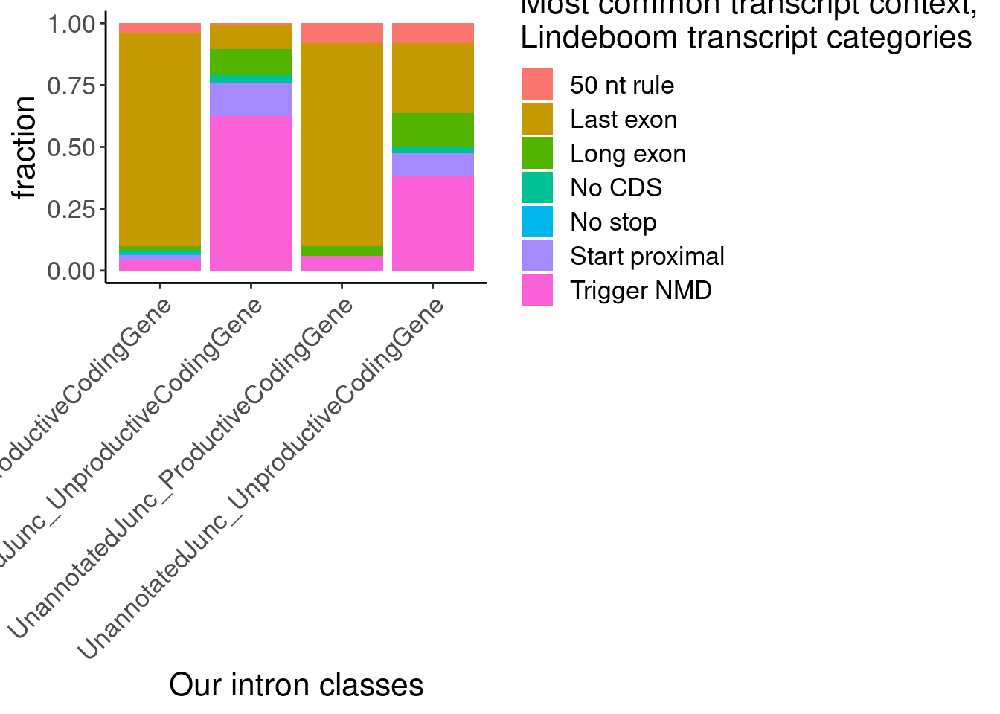
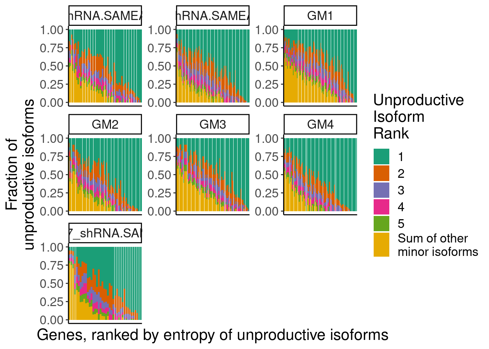
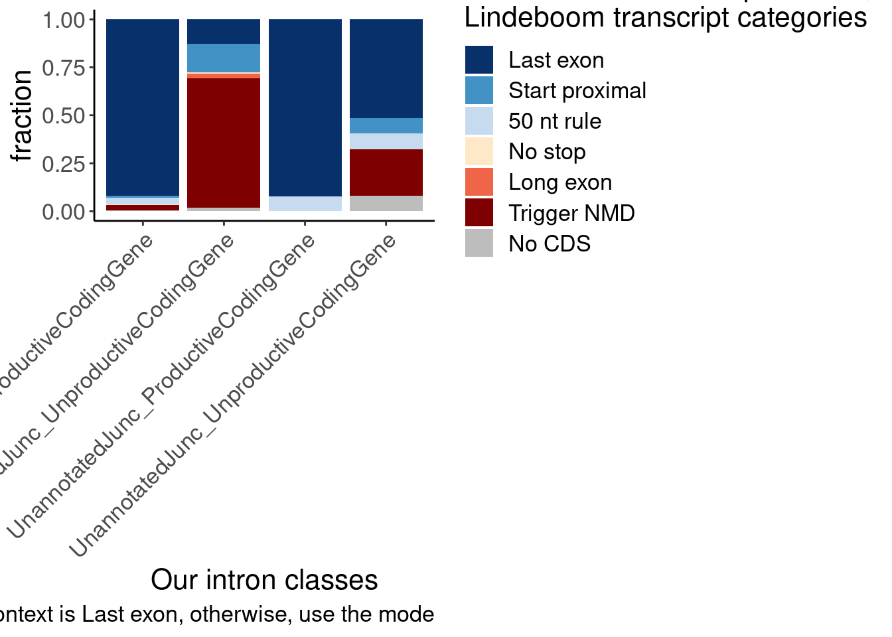

Last updated: 2024-04-24
Checks: 7 0
Knit directory:
ChromatinSplicingQTLs/analysis/
This reproducible R Markdown analysis was created with workflowr (version 1.7.0). The Checks tab describes the reproducibility checks that were applied when the results were created. The Past versions tab lists the development history.
Great! Since the R Markdown file has been committed to the Git repository, you know the exact version of the code that produced these results.
Great job! The global environment was empty. Objects defined in the global environment can affect the analysis in your R Markdown file in unknown ways. For reproduciblity it’s best to always run the code in an empty environment.
The command set.seed(20191126) was run prior to running
the code in the R Markdown file. Setting a seed ensures that any results
that rely on randomness, e.g. subsampling or permutations, are
reproducible.
Great job! Recording the operating system, R version, and package versions is critical for reproducibility.
Nice! There were no cached chunks for this analysis, so you can be confident that you successfully produced the results during this run.
Great job! Using relative paths to the files within your workflowr project makes it easier to run your code on other machines.
Great! You are using Git for version control. Tracking code development and connecting the code version to the results is critical for reproducibility.
The results in this page were generated with repository version 2eb27cd. See the Past versions tab to see a history of the changes made to the R Markdown and HTML files.
Note that you need to be careful to ensure that all relevant files for
the analysis have been committed to Git prior to generating the results
(you can use wflow_publish or
wflow_git_commit). workflowr only checks the R Markdown
file, but you know if there are other scripts or data files that it
depends on. Below is the status of the Git repository when the results
were generated:
Ignored files:
Ignored: .DS_Store
Ignored: .Rhistory
Ignored: .Rproj.user/
Ignored: analysis/.Rhistory
Ignored: code/.DS_Store
Ignored: code/.RData
Ignored: code/._report.html
Ignored: code/.ipynb_checkpoints/
Ignored: code/.snakemake/
Ignored: code/APA_Processing/
Ignored: code/Alignments/
Ignored: code/ChromHMM/
Ignored: code/ENCODE/
Ignored: code/ExpressionAnalysis/
Ignored: code/ExtractPhenotypeBedByGenotype.py
Ignored: code/FastqFastp/
Ignored: code/FastqFastpSE/
Ignored: code/FastqSE/
Ignored: code/FineMapping/
Ignored: code/GTEx/
Ignored: code/Gencode.v34.6Colors.bed.gz
Ignored: code/Genotypes/
Ignored: code/H3K36me3_CutAndTag.pdf
Ignored: code/IntronSlopes/
Ignored: code/LR.bed
Ignored: code/LR.seq.bed
Ignored: code/LongReads/
Ignored: code/MYB.tracks.ini
Ignored: code/Metaplots/
Ignored: code/Misc/
Ignored: code/MiscCountTables/
Ignored: code/Multiqc/
Ignored: code/Multiqc_chRNA/
Ignored: code/NonCodingRNA/
Ignored: code/NonCodingRNA_annotation/
Ignored: code/PairwisePi1Traits.P.all.txt.gz
Ignored: code/PeakCalling/
Ignored: code/Phenotypes/
Ignored: code/PlotGruberQTLs/
Ignored: code/PlotQTLs/
Ignored: code/ProCapAnalysis/
Ignored: code/QC/
Ignored: code/QTL_SNP_Enrichment/
Ignored: code/QTLs/
Ignored: code/RPKM_tables/
Ignored: code/ReadLengthMapExperiment/
Ignored: code/ReadLengthMapExperimentResults/
Ignored: code/ReadLengthMapExperimentSpliceCounts/
Ignored: code/ReferenceGenome/
Ignored: code/Rplots.pdf
Ignored: code/Session.vim
Ignored: code/SmallMolecule/
Ignored: code/SplicingAnalysis/
Ignored: code/TODO
Ignored: code/Tehranchi/
Ignored: code/alias/
Ignored: code/bigwigs/
Ignored: code/bigwigs_FromNonWASPFilteredReads/
Ignored: code/config/.DS_Store
Ignored: code/config/._.DS_Store
Ignored: code/config/.ipynb_checkpoints/
Ignored: code/config/config.local.yaml
Ignored: code/dag.pdf
Ignored: code/dag.png
Ignored: code/dag.svg
Ignored: code/data/
Ignored: code/debug.ipynb
Ignored: code/debug_python.ipynb
Ignored: code/deepTools/
Ignored: code/featureCounts/
Ignored: code/featureCountsBasicGtf/
Ignored: code/genome_config.yaml
Ignored: code/gwas_summary_stats/
Ignored: code/hyprcoloc/
Ignored: code/igv_session.xml
Ignored: code/isoseqbams/
Ignored: code/log
Ignored: code/logs/
Ignored: code/notebooks/.ipynb_checkpoints/
Ignored: code/pi1/
Ignored: code/polyA.Splicing.Subset_YRI.NominalPassForColoc.bed.bgz
Ignored: code/rules/.ipynb_checkpoints/
Ignored: code/rules/OldRules/
Ignored: code/rules/notebooks/
Ignored: code/salmontest/
Ignored: code/scratch/
Ignored: code/scripts/.ipynb_checkpoints/
Ignored: code/scripts/GTFtools_0.8.0/
Ignored: code/scripts/__pycache__/
Ignored: code/scripts/liftOverBedpe/liftOverBedpe.py
Ignored: code/snakemake.dryrun.log
Ignored: code/snakemake.log
Ignored: code/snakemake.sbatch.log
Ignored: code/snakemake_profiles/slurm/__pycache__/
Ignored: code/test.introns.bed
Ignored: code/test.introns2.bed
Ignored: code/test.log
Ignored: code/tracks.xml
Ignored: data/.DS_Store
Ignored: data/GWAS_catalog_summary_stats_sources/._list_gwas_summary_statistics_6_Apr_2022-10.csv
Ignored: data/GWAS_catalog_summary_stats_sources/._list_gwas_summary_statistics_6_Apr_2022-11.csv
Ignored: data/GWAS_catalog_summary_stats_sources/._list_gwas_summary_statistics_6_Apr_2022-2.csv
Ignored: data/GWAS_catalog_summary_stats_sources/._list_gwas_summary_statistics_6_Apr_2022-3.csv
Ignored: data/GWAS_catalog_summary_stats_sources/._list_gwas_summary_statistics_6_Apr_2022-4.csv
Ignored: data/GWAS_catalog_summary_stats_sources/._list_gwas_summary_statistics_6_Apr_2022-5.csv
Ignored: data/GWAS_catalog_summary_stats_sources/._list_gwas_summary_statistics_6_Apr_2022-6.csv
Ignored: data/GWAS_catalog_summary_stats_sources/._list_gwas_summary_statistics_6_Apr_2022-7.csv
Ignored: data/GWAS_catalog_summary_stats_sources/._list_gwas_summary_statistics_6_Apr_2022-8.csv
Ignored: data/GWAS_catalog_summary_stats_sources/._list_gwas_summary_statistics_6_Apr_2022.csv
Ignored: data/Metaplots/.DS_Store
Ignored: output/~$20240223_NumQTLs_edited.xlsx
Note that any generated files, e.g. HTML, png, CSS, etc., are not included in this status report because it is ok for generated content to have uncommitted changes.
These are the previous versions of the repository in which changes were
made to the R Markdown
(analysis/2024-03-07_InvestigateTranslatedLongReads.Rmd)
and HTML
(docs/2024-03-07_InvestigateTranslatedLongReads.html)
files. If you’ve configured a remote Git repository (see
?wflow_git_remote), click on the hyperlinks in the table
below to view the files as they were in that past version.
| File | Version | Author | Date | Message |
|---|---|---|---|---|
| Rmd | 2eb27cd | Benjmain Fair | 2024-04-24 | Update nb after revisions |
| Rmd | 420d8dd | Benjmain Fair | 2024-03-18 | updates for review response |
library(data.table)
library(tidyverse)
library(ggbreak)
# Set theme
theme_set(
theme_classic() +
theme(text=element_text(size=16, family="Helvetica")))
# I use layer a lot, to rotate long x-axis labels
Rotate_x_labels <- theme(axis.text.x = element_text(angle = 45, vjust = 1, hjust=1))
sample_n_of <- function(data, size, ...) {
dots <- quos(...)
group_ids <- data %>%
group_by(!!! dots) %>%
group_indices()
sampled_groups <- sample(unique(group_ids), size)
data %>%
filter(group_ids %in% sampled_groups)
}dat <- c(Sys.glob("../code/LongReads/bed12translated/*/CTRL*_shRNA.*.bed.gz"),
Sys.glob("../code/LongReads/bed12translated/*/GM[1234].bed.gz"),
Sys.glob("../code/LongReads/bed12translated/*/SMG6_SMG7_shRNA.SAMEA8691113.bed.gz")) %>%
setNames(str_replace(., "../code/LongReads/bed12translated/(.+?)/(.+?).bed.gz", "\\1;\\2")) %>%
lapply(fread, col.names=c("chrom", "start", "stop", "ReadName", "score", "strand", "thickStart", "thickEnd", "Color", "blocks","blockSizes", "blockStarts", "sequence", "NMDFinderB", "AllJuncsIdentifiable", "Introns")) %>%
bind_rows(.id="approach_sample") %>%
separate(approach_sample, into=c("ORF.translation.approach", "sample"), sep=";")dat %>%
filter(str_detect(chrom, "^chr[1-9]")) %>%
count(NMDFinderB, ORF.translation.approach, sample, AllJuncsIdentifiable) %>%
filter(!NMDFinderB=="No CDS") %>%
mutate(sample = str_replace(sample, "(.+?)\\..+$", "\\1")) %>%
mutate(sample = if_else(str_detect(sample, "shRNA"), paste0("Nanopore_", sample), paste0("PacBio_", sample))) %>%
ggplot(aes(x=sample, fill=NMDFinderB, y=n)) +
geom_col(position="fill") +
# geom_col(position="stack") +
facet_grid(AllJuncsIdentifiable~ORF.translation.approach) +
Rotate_x_labels +
labs(y="fractionReads", fill="Lindeboom\ncategory")dat %>%
filter(str_detect(chrom, "^chr[1-9]")) %>%
count(NMDFinderB, ORF.translation.approach, sample, AllJuncsIdentifiable) %>%
filter(!NMDFinderB=="No CDS") %>%
mutate(sample = str_replace(sample, "(.+?)\\..+$", "\\1")) %>%
mutate(sample = if_else(str_detect(sample, "shRNA"), paste0("Nanopore_", sample), paste0("PacBio_", sample))) %>%
ggplot(aes(x=sample, fill=NMDFinderB, y=n)) +
# geom_col(position="fill") +
geom_col(position="stack") +
facet_grid(AllJuncsIdentifiable~ORF.translation.approach) +
Rotate_x_labels +
labs(y="NumberReads", fill="Lindeboom\ncategory")Replot now, just including transcripts with all identifiable juncs
dat %>%
filter(str_detect(chrom, "^chr[1-9]")) %>%
count(NMDFinderB, ORF.translation.approach, sample, AllJuncsIdentifiable) %>%
filter(!NMDFinderB=="No CDS") %>%
filter(AllJuncsIdentifiable) %>%
mutate(sample = str_replace(sample, "(.+?)\\..+$", "\\1")) %>%
mutate(sample = if_else(str_detect(sample, "shRNA"), paste0("Nanopore_", sample), paste0("PacBio_", sample))) %>%
ggplot(aes(x=sample, fill=NMDFinderB, y=n)) +
geom_col(position="fill") +
# geom_col(position="stack") +
scale_y_continuous(breaks=seq(0,1,0.1)) +
facet_grid(AllJuncsIdentifiable~ORF.translation.approach) +
Rotate_x_labels +
labs(y="fractionReads", fill="Lindeboom\ncategory")Replot again, without excluding those…
dat %>%
distinct(sample) sample
1: CTRL1_shRNA.SAMEA8691110
2: CTRL2_shRNA.SAMEA8691111
3: GM1
4: GM2
5: GM3
6: GM4
7: SMG6_SMG7_shRNA.SAMEA8691113dat %>%
filter(str_detect(chrom, "^chr[1-9]")) %>%
count(NMDFinderB, ORF.translation.approach, sample) %>%
filter(!NMDFinderB=="No CDS") %>%
mutate(sample = str_replace(sample, "(.+?)\\..+$", "\\1")) %>%
mutate(sample = if_else(str_detect(sample, "shRNA"), paste0("Nanopore_", sample), paste0("PacBio_", sample))) %>%
ggplot(aes(x=sample, fill=NMDFinderB, y=n)) +
geom_col(position="fill") +
# geom_col(position="stack") +
scale_y_continuous(breaks=seq(0,1,0.1)) +
facet_wrap(~ORF.translation.approach) +
Rotate_x_labels +
labs(y="fractionReads", fill="Lindeboom\ncategory")Let’s replot by intron counts…
dat %>%
filter(AllJuncsIdentifiable) %>%
filter(str_detect(chrom, "^chr[1-9]")) %>%
filter(str_detect(sample, "shRNA")) %>%
mutate(NumJuncs = str_count(sequence, "\\|")) %>%
mutate(NumJuncs.condensed = case_when(
NumJuncs < 12 ~ as.numeric(NumJuncs),
NumJuncs >= 12 ~ as.numeric(13),
TRUE ~ NA_real_
)) %>%
count(NMDFinderB, ORF.translation.approach, sample, NumJuncs.condensed) %>%
group_by(ORF.translation.approach, sample, NumJuncs.condensed) %>%
mutate(Percent = n/sum(n)*100) %>%
ungroup() %>%
filter(!NMDFinderB=="Last exon") %>%
ggplot(aes(x=NumJuncs.condensed, color=NMDFinderB, y=Percent)) +
geom_line() +
facet_grid(sample~ORF.translation.approach) +
scale_x_continuous(breaks=c(0:13), labels=c(0:12, ">12")) +
theme_bw() +
Rotate_x_labels +
labs(y="fractionReads", color="Lindeboom\ncategory") +
coord_cartesian(xlim=c(0,13))Now let’s see how these annotations compare to our our junction annotatoins… Of course there needs to be some method to map transcript annotations to junctions… Perhaps the approach is to just take the most common Lindeboom annotation for each transcript that contains the junction..
JunctionAnnotations <- read_tsv("../data/IntronAnnotationsFromYang.Updated.tsv.gz") %>%
mutate(Introns = paste(chrom, start, end, strand, sep="_"))
Mode <- function(x) {
ux <- unique(x)
ux[which.max(tabulate(match(x, ux)))]
}
dat %>%
filter(AllJuncsIdentifiable) %>%
filter(str_detect(chrom, "^chr[1-9]")) %>%
# filter(str_detect(sample, "shRNA")) %>%
filter(ORF.translation.approach == "firstORF") %>%
separate_rows(Introns, sep=",") %>%
inner_join(
JunctionAnnotations %>%
dplyr::select(-chrom, -start, -strand, -end)) %>%
add_count(Introns) %>%
filter(n>3) %>%
group_by(Introns) %>%
mutate(ModeNMDFinder = Mode(NMDFinderB)) %>%
ungroup() %>%
dplyr::select(-n) %>%
distinct(Introns, .keep_all=T) %>%
count(ModeNMDFinder, SuperAnnotation) %>%
group_by(SuperAnnotation) %>%
mutate(TotalIntsInSuperAnnotation = sum(n)) %>%
ungroup() %>%
filter(!str_detect(SuperAnnotation, "Noncoding")) %>%
ggplot(aes(x=SuperAnnotation, y=n, fill=ModeNMDFinder)) +
geom_col(position='fill') +
Rotate_x_labels +
labs(x="Our intron classes", fill="Most common transcript context,\nLindeboom transcript categories", y="fraction")
dat %>%
filter(AllJuncsIdentifiable) %>%
filter(str_detect(chrom, "^chr[1-9]")) %>%
# filter(str_detect(sample, "shRNA")) %>%
filter(ORF.translation.approach == "firstORF") %>%
separate_rows(Introns, sep=",") %>%
inner_join(
JunctionAnnotations %>%
dplyr::select(-chrom, -start, -strand, -end)) %>%
add_count(Introns) %>%
filter(n>3) %>%
group_by(Introns) %>%
mutate(ModeNMDFinder = Mode(NMDFinderB)) %>%
ungroup() %>%
dplyr::select(-n) %>%
distinct(Introns, .keep_all=T) %>%
count(ModeNMDFinder, SuperAnnotation) %>%
group_by(SuperAnnotation) %>%
mutate(TotalIntsInSuperAnnotation = sum(n)) %>%
ungroup() %>%
filter(!str_detect(SuperAnnotation, "Noncoding")) %>%
ggplot(aes(x=ModeNMDFinder, y=n, fill=SuperAnnotation)) +
geom_col(position='fill') +
Rotate_x_labels +
labs(fill="Our intron classes", x="Most common transcript context,\nLindeboom transcript categories", y="fraction")The other version of the plot is more informative and easier to interpret. But of note is the small subset of juncs that are NMD-targets and annotated_productive. I think this happens because some genes are majority NMD-targets, which means even consitutive productive junctions will get mis-classified as NMD targets. Carlos had the suggestion to just classify the juncs that are in at least one “Last exon” read as Last exon, then I can use the mode for the other categories. Let’s try that, and/or this similar idea: classify juncs as “Last exon” if at least 10% (or some low threshold) of transcript contexts are “Lats exon”.
dat %>%
filter(AllJuncsIdentifiable) %>%
filter(str_detect(chrom, "^chr[1-9]")) %>%
# filter(str_detect(sample, "shRNA")) %>%
filter(ORF.translation.approach == "firstORF") %>%
separate_rows(Introns, sep=",") %>%
inner_join(
JunctionAnnotations %>%
dplyr::select(-chrom, -start, -strand, -end)) %>%
add_count(Introns) %>%
filter(n>3) %>%
add_count(Introns, NMDFinderB, name="NumNMDFinderContexts") %>%
group_by(Introns) %>%
mutate(FractionNMDFinderBContexts = NumNMDFinderContexts/sum(NumNMDFinderContexts)) %>%
mutate(NMDFinderB = case_when(
any(NMDFinderB == "Last exon") & FractionNMDFinderBContexts >=0.1 ~ "Last exon",
TRUE ~ NMDFinderB
)) %>%
mutate(ModeNMDFinder = Mode(NMDFinderB)) %>%
ungroup() %>%
dplyr::select(-n) %>%
distinct(Introns, .keep_all=T) %>%
count(ModeNMDFinder, SuperAnnotation) %>%
group_by(SuperAnnotation) %>%
mutate(TotalIntsInSuperAnnotation = sum(n)) %>%
ungroup() %>%
filter(!str_detect(SuperAnnotation, "Noncoding")) %>%
ggplot(aes(x=SuperAnnotation, y=n, fill=ModeNMDFinder)) +
geom_col(position='fill') +
Rotate_x_labels +
labs(x="Our intron classes", fill="Most common transcript context,\nLindeboom transcript categories", y="fraction", caption="If >10% of context is Last exon, then most common context is Last exon, otherwise, use the mode")That helps, but there are still some “Trigger NMD” introns in the annoteted productive junctions… Will have to manually inspect those to see what is going on… But overall I think this is pretty satisfactory for addressing reviewer concerns…
Now let’s reexamine a few more things with this data:
How many isoforms are responsible for the majority of NMD transcripts for each gene?
First I think I need to identify the gene for each transcript. I can do this by finding the mode of those gene after joining by intron annotations
dat %>%
count(NMDFinderB) NMDFinderB n
1: 50 nt rule 58165
2: Last exon 1132206
3: Long exon 30098
4: No CDS 448760
5: No stop 4241
6: Start proximal 23402
7: Trigger NMD 68252dat.temp.readattributed <- dat %>%
filter(AllJuncsIdentifiable) %>%
filter(str_detect(chrom, "^chr[1-9]")) %>%
filter(ORF.translation.approach == "firstORF") %>%
separate_rows(Introns, sep=",") %>%
inner_join(
JunctionAnnotations %>%
dplyr::select(-chrom, -start, -strand, -end)) %>%
group_by(ReadName, sample) %>%
mutate(GeneAttributedToRead = Mode(symbol)) %>%
ungroup() %>%
distinct(sample, ReadName, GeneAttributedToRead, ORF.translation.approach) %>%
inner_join(dat) %>%
filter(!NMDFinderB %in% c("Last exon", "50 nt rule", "No CDS")) %>%
add_count(sample, GeneAttributedToRead, name="GeneCounts") %>%
filter(GeneCounts > 10)
dat.temp <- dat.temp.readattributed %>%
count(Introns, sample, GeneAttributedToRead, GeneCounts, name="IsoformCounts") %>%
mutate(PercentIsoform = IsoformCounts/GeneCounts) %>%
# filter(GeneAttributedToRead=="SRSF5") %>%
# filter(GeneAttributedToRead=="RPL12") %>%
group_by(sample, GeneAttributedToRead) %>%
mutate(IsoformRank = rank(desc(PercentIsoform), ties.method = "random")) %>%
mutate(IsoformRank = case_when(
IsoformRank < 6 ~ as.numeric(IsoformRank),
TRUE ~ as.numeric(6)
)) %>%
mutate(IsoformRank = factor(IsoformRank)) %>%
ungroup() %>%
mutate(EntropyPart = PercentIsoform * log2(PercentIsoform)) %>%
group_by(sample, GeneAttributedToRead) %>%
mutate(Entropy = sum(EntropyPart)) %>%
ungroup() %>%
# arrange(sample, GeneAttributedToRead, IsoformRank, PercentIsoform)
group_by(sample, GeneAttributedToRead, IsoformRank) %>%
mutate(PercentIsoform = sum(PercentIsoform)) %>%
ungroup() %>%
distinct(sample, GeneAttributedToRead, IsoformRank, .keep_all=T)
dat.temp.entropy.ordered.genes <- dat.temp %>%
distinct(sample, GeneAttributedToRead, .keep_all=T) %>%
arrange(sample, Entropy) %>%
mutate(GeneAttributedToRead.DummyByEntropy = row_number())
dat.temp %>%
inner_join(dat.temp.entropy.ordered.genes %>%
dplyr::select(sample, GeneAttributedToRead, GeneAttributedToRead.DummyByEntropy)) %>%
mutate(GeneAttributedToRead.DummyByEntropy = factor(GeneAttributedToRead.DummyByEntropy)) %>%
ggplot(aes(x=GeneAttributedToRead.DummyByEntropy, y=PercentIsoform, fill=IsoformRank)) +
geom_col() +
facet_wrap(~sample, scales="free") +
scale_fill_brewer(palette = "Dark2", labels=c(1:5, "Sum of other\nminor isoforms")) +
theme(
axis.text.x=element_blank(),
axis.ticks.x=element_blank()) +
labs(fill="Unproductive\nIsoform\nRank", x="Genes, ranked by entropy of unproductive isoforms", y="Fraction of\nunproductive isoforms")
dat.temp %>%
filter(str_detect(sample, "SMG6")) %>%
filter(GeneCounts > 10 & GeneCounts < 20) %>%
inner_join(dat.temp.entropy.ordered.genes %>%
dplyr::select(sample, GeneAttributedToRead, GeneAttributedToRead.DummyByEntropy)) %>%
mutate(GeneAttributedToRead.DummyByEntropy = factor(GeneAttributedToRead.DummyByEntropy)) %>%
ggplot(aes(x=GeneAttributedToRead, y=PercentIsoform, fill=IsoformRank)) +
geom_col() +
facet_wrap(~sample, scales="free") +
scale_fill_brewer(palette = "Dark2", labels=c(1:5, "Sum of other\nminor isoforms")) +
labs(fill="Unproductive\nIsoform\nRank", x="Genes, ranked by entropy of unproductive isoforms", y="Fraction of\nunproductive isoforms") +
Rotate_x_labelsdat.temp %>%
distinct(GeneAttributedToRead, sample) %>%
count(sample)# A tibble: 7 × 2
sample n
<chr> <int>
1 CTRL1_shRNA.SAMEA8691110 57
2 CTRL2_shRNA.SAMEA8691111 111
3 GM1 112
4 GM2 74
5 GM3 73
6 GM4 73
7 SMG6_SMG7_shRNA.SAMEA8691113 40dat.temp %>%
filter(str_detect(sample, "SMG6")) %>%
filter(GeneAttributedToRead == "RPS12")# A tibble: 2 × 9
Introns sample GeneAttributedT… GeneCounts IsoformCounts PercentIsoform
<chr> <chr> <chr> <int> <int> <dbl>
1 chr6_13281461… SMG6_… RPS12 15 2 0.133
2 chr6_13281461… SMG6_… RPS12 15 13 0.867
# … with 3 more variables: IsoformRank <fct>, EntropyPart <dbl>, Entropy <dbl>dat %>%
filter(AllJuncsIdentifiable) %>%
filter(str_detect(chrom, "^chr[1-9]")) %>%
# filter(str_detect(sample, "shRNA")) %>%
filter(ORF.translation.approach == "firstORF") %>%
filter(!NMDFinderB %in% c("Last exon", "50 nt rule", "No CDS")) ORF.translation.approach sample chrom start
1: firstORF CTRL1_shRNA.SAMEA8691110 chr1 1373771
2: firstORF CTRL1_shRNA.SAMEA8691110 chr1 1386702
3: firstORF CTRL1_shRNA.SAMEA8691110 chr1 1386714
4: firstORF CTRL1_shRNA.SAMEA8691110 chr1 1386719
5: firstORF CTRL1_shRNA.SAMEA8691110 chr1 6186614
---
36605: firstORF SMG6_SMG7_shRNA.SAMEA8691113 chr9 136992443
36606: firstORF SMG6_SMG7_shRNA.SAMEA8691113 chr9 137086990
36607: firstORF SMG6_SMG7_shRNA.SAMEA8691113 chr9 137110543
36608: firstORF SMG6_SMG7_shRNA.SAMEA8691113 chr9 137110549
36609: firstORF SMG6_SMG7_shRNA.SAMEA8691113 chr9 137110567
stop ReadName score strand thickStart thickEnd
1: 1375172 ERR5880581.2074895 60 - 1374170 1374756
2: 1399322 ERR5880581.1291885 60 - 1392779 1399306
3: 1399305 ERR5880581.2158516 60 - 1392779 1398665
4: 1399314 ERR5880581.1144155 60 - 1395468 1399306
5: 6199593 ERR5880581.770321 60 - 6197695 6199573
---
36605: 136993973 ERR5880584.601978 60 + 136992447 136992590
36606: 137109180 ERR5880584.617848 60 + 137086999 137107363
36607: 137114716 ERR5880584.845587 60 - 137113054 137114713
36608: 137114729 ERR5880584.451624 60 - 137113277 137114713
36609: 137114716 ERR5880584.822699 60 - 137113277 137114713
Color blocks blockSizes
1: 255,255,51 4 131,446,73,176
2: 255,255,51 11 880,95,112,142,105,2038,65,121,110,75,304
3: 228,26,28 12 868,95,112,142,105,100,125,65,121,110,75,287
4: 228,26,28 11 863,93,112,142,105,100,65,117,110,75,296
5: 255,127,0 4 202,125,105,36
---
36605: 255,255,51 5 531,191,69,85,208
36606: 228,26,28 13 228,109,137,155,110,186,149,189,191,121,173,132,793
36607: 228,26,28 12 240,71,65,154,119,61,167,82,164,140,114,70
36608: 228,26,28 12 234,71,65,157,119,61,167,82,136,164,140,267
36609: 228,26,28 12 216,71,65,157,119,61,167,82,136,164,140,254
blockStarts
1: 0,228,946,1225
2: 0,1072,1251,3527,3756,4063,6693,8691,11530,11894,12316
3: 0,1060,1239,3515,3744,4051,5964,6681,8679,11518,11882,12304
4: 0,1057,1234,3510,3739,4046,6676,8674,11513,11877,12299
5: 0,6315,11037,12943
---
36605: 0,609,899,1136,1322
36606: 0,1084,1878,9246,10837,12705,14014,14493,19134,19698,20284,20540,21397
36607: 0,336,1146,1332,1568,2201,2409,2662,3321,3699,3919,4103
36608: 0,330,1140,1323,1562,2195,2403,2656,2811,3315,3693,3913
36609: 0,312,1122,1305,1544,2177,2385,2638,2793,3297,3675,3895
sequence
1: CAATTTGAGCCGCGTCGAGGTCGGGCTTGGGAAGGGTCAGCGGGAGGCCTGAGGGCGCCGGGCGCTGCGGCAGGCGGGCCCGGGGTCCAGCCGAGAGGGTCCGGGCGCCAGGCAACGCGATTCGCGCGGGGGTGAACCCGGGGAGGGGGCCGGCCTCCCCGTTCTGGGACCTTTCG|CTCCCCTGGGACCTGTGGCCGCCGCCCACAGACC^ATGCTCCTGGGGCGCCTGACTTCCCAGCTGTTGAGGGCC|GCGGCCGCCCGCCTTGGCCCGTCTCTGGAGTGCTGGGCAGCCGGGTCTGCGGGCCCCTTTACAGCACATCGCCGGCCGGCCCAGGTAGGGCGGCCTCTCTCCCTCGCAAGGGGGCCCAGCTGGAGCTGGAGGAGATGCTGGTCCCCAGGAAGATGTCCGTCAGCCCCCTGGAGAGCTGGCTCACGGCCCGCTGCTTCCTGCCCAGACTGGATACCGGGACCGCAGGGACTGTGGCTCCACCGCAATCCTACCAGTGTCCGCCCAGCCAGATAG*GGGAAGGGGCCGAGCAGGGGGATGAAGGCGTCGCGGATGCGCCTCAAATTCAGTGCAAAAACGTGCTGAAGATCCGCCGGCGGAAGATGAACCACCACAAGTACCGGAAGCTGGTGAAGAAGACGCGGTTCCTGCGGAGGAAGGTCCAGGAGGGACGCCTGAGACGCAAGCAG|ATCAAGTTCGAGAAAGACCTGAGGCGCATCTGGCTGAAGGCGGGGCTAAAGGAAGCCCCCGAAGGCTGGCAGACCCCCAAGATCTACCTGCGGGGCAAATGAGTCTGGCGCCGCCCTTCCCGCCCGTTGCT
2: GAGTCGGCGGCACAAA^ATGGCGGCGGCGGCGGCGGCGGCTGGTGCTGCAGGGTCGGCAGCTCCCGCGGCAGCGGCCGGCGCCCCGGGATCTGGGGGCGCACCCTCAGGGTCGCAGGGGGTGCTGATCGGGGACAGGCTGTACTCCGGGGTGCTCATCACCTTGGAGAACTGCCTCCTGCCTGACGACAAGCTCCGTTTCACGCCGTCCATGTCGAGCGGCCTCGACACCGACACAGAGACCGACCTCCGCGTGGTGGGCTGCGAGCTCATCCAGGCGGCCGGTATCCTGCTCCGCCTGCCGCAG|GTGGCCATGGCTACCGGGCAGGTGTTGTTCCAGCGGTTCTTTTATACCAAGTCCTTCGTGAAGCACTCCATGGAG|CATGTGTCAATGGCCTGTGTCCACCTGGCTTCCAAGATAGAAGAGGCCCCAAGACGCATACGGGACGTCATCAATGTGTTTCACCGCCTTCGACAGCTGAGAGACAAAAA|GAAGCCCGTGCCTCTACTACTGGATCAAGATTATGTTAATTTAAAGAACCAAATTATAAAGGCGGAAAGACGAGTTCTCAAAGAGTTGGGTTTCTGCGTCCATGTGAAGCATCCTCATAAG|ATAATCGTTATGTACCTTCAGGTGTTAGAGTGTGAGCGTAACCAACACCTGGTCCAGACCTCATG|GGTAGCCTCTGAGGGTAAGTGA*CTAAGACTTCTCCTCTGCTGTCCAAGCGCTTTGGTGCAGGGACAGCGGCATCTTCAGCCAATCCAGTGCAGGCTCTCCACCGAAGGCTGGCTCTAGACTGGTGGTACGCACATAGCATAGCCATGGCCGACTCCTGCTGTGGTTCTCTGACGATTGTGCTTCTTGTTAATCCTCTGTCGTGCTTTGGTAATCGTATTGATTAGAGTTGGTAACTGTCTTGACTTGAATTTTGTCCCTTTAAAACTGCTGTACCTGTATGATAAAGATGCAGTACCTTTCTCTTAAAAAAAAATGCTATGGAAAGCTGTGAGAATTGAAGAGACAAATTGGCTGTGTCAGTGTGGGGTTATGTCATGATTTCTAGAAGCCCTGAAGTTGCTCTTTTGAGCAGCTTTGCATGACACGCTCTGGTAAAAGGTGTGCATCTTTAAATTATTTCATGGATACTTTGAAAAATATTGTATCACTTCAAATACAGCAATAAGTTTATATGTTCTCAAGATTTCATTTGTTTTTAAGAATTTTAAGTTCGTGGATTAATATCACTACTTGAATACTGACAGTTGTTGATTAGACACCGAAAGGTTACTGATTGTTGAATGTATCTGTGTTAGAGCTGTGCACTGGCACGCTTGCATCAGGGGCTGGGGCCACACGGCCGCCACACAGATTCCCCCGTGATGCCTGGAGCTGCTTCCAGAGCCGGGTGTCTCCAAGAGGCACCTGTAGGACTTCCCATTTAGAAATCTCTTGAGTGGGTTTGTATGTTACCTTCTCCAAGGTTTATTTAGGACAGAGATATTGCTGGAAGGTCATGGGTCAGATTCCCTCACAACCCACCTCGTCTGCGGGTGCAGCCCCACTCCAAGGCTCCCCGTTATTGGGGTATGTGAGGAGCAGTAAATATAAAACCAGTTCAACTGTCCTCATGGAATCACCCTTTCTGTTTTTGCAGTATTCATAAAGCTAGTGTAAGGTCTGGTTTTAGTCTATTAAATCTTAGAGATCTAAAGGAAATGCTCAAAATGTAGCCAGGTTTTAAATGCTTTAACTTTTAAAAAATGTAAATTTTTGTATGTTTATAGCTTCTAAATATGAAAGTTAAAGAATGTACTGTGATGAAATGTTCAGTATTATGTTGCTTCTCAGTATCATGTTGCTTCTCAGTATTGTGTTGCTTCTGATTCTATGAATGTTCATTTTAAGACCCCTTGTTGAAATGGGACAGTTGGCAGCGGCTCTGATGAGCCCGAGAAGAGGCCTGCCCTTGGGTGCGGAGTCTCCCTCCGCACGATGCTCCCACGCGTCCAACTTGCACCCAAGGGGCTTTTCCCTCTTCCAAGTGGACTCCTTCAAGGAAGCTGCAGCTCGGTCAGCAGAGAAGGGGCCTGCCGCCAGCGCCCTGGAGGAAGAGGAAGAGGAACCCAAGAGGATGGCTTGTCTCCCAGCAGCCACACCGGCTTTGTGCTCAGCCAGTTCATTTGAGTTTGCATGTTTCTCTGCACTATGGATTTTGAGCATTTAGATTTCTTTAATCAAAAGCGTTTTAGTGACTCCAGTAGACATTTTCTTTCTGAGGCATCGTGCTTTGCATGAGAGCAGGCCAAGGTTGAGGGGAAAAGTAAAGTTAAAGTCGGTTCTCTTTCATAGCAACACGTATTGTCTGACATTCAGCCAGCTTTTTTTTTTTCTAATAATTTCTGTGCCTTTCTGTCCTGTATTTACTGTATTTAGAAAAAGCAGCTAGAATATTTCTCCATTAACTCTTGAGATTCACAGGACTGTCTAGCTCTGAGTCCTAGCAATAGACTCCTTAGAGGAGTAGTACGTTTATCTAGATTTTCTCTAGATAATGCAGGCGGAAGACCTGGGTTCCCGGGTGGGGCATTGCAGTTCTTCCTGTGTTTGGCTTCCAGGAATTACATGAACGACAGCCTTCGCACCGACGTCTTCGTGCGGTTCCAGCCAGAGAGCATCGCCTGTGCCTGCATTTATCTTGCTGCCCGGACGCTGGAG|ATCCCTTTGCCCAATCGTCCCCATTGGTTTCTTTTGTTTGGAGCAACTGAAGAAGAAATTCAGGAAATCTGCTTAAAGATCTTGCAGCTTTATGCTCGGAAAAAG|GTTGATCTCACACACCTGGAGGGTGAAGTGGAAAAAAGAAAGCACGCTATCGAAGAGGCAAAGGCCCAAGCCCGGGGCCTGTTGCCTGGGGGCACACAGGTGCTGGATGGTACCTCGGGGTTCTCTCCTGCCCCCAAGCTGG|TGGAATCCCCCAAAGAAGGTAAAGGGAGCAAGCCTTCCCCACTGTCTGTGAAGAACACCAAGAGGAGGCTGGAGGGCGCCAAGAAAGCCAAGGCGGACAGCCCCGTGAACGG|CTTGCCAAAGGGGCGAGAGAGTCGGAGTCGGAGCCGGAGCCGTGAGCAGAGCTACTCGAGGTCCCCATCCCGATCAGCGTCTCCTAAGAGGAGGT|GAAAAGTGACAGCGGCTCCACATCTGGTGGGTCCAAGTCGCAGAGCCGCTCCCGGAGCAGGAGTGACTCCCCACCGAGACAGGCCCCCCGCAGCGCTCCCTACAAAGGCTCTGAGATTCGGGGCTCCCGGAAGTCCAAGGACTGCAAGTACCCCCAGAAGCCACACAAGTCTCGGAGCCGGAGTTCTTCCCGTTCTCGAAGCAGGTCACGGGAGCGGGCGGATAATCCGGGAAAATACAAGAAGAAAAGTCATTACTACAGAGATCAGCGACGAGAGCGCTCGAGGTCGTATGAACGCACAGGCCGTCGCTATGAGCGGGACCACCCTGGGCACAGCAGGCATCGGAGGTGAGGCGGGGTTGCAGTGACTGGTGGCCGCAAGCCCTTCCCTGGGGAGTACCTGATGGCTGCCCTTTGACCCCCGGTGGCTGCCCTTTGACCCCCGGGTGTGCTCTCAGCGCAAGTGGTCCTAGAACAGGATTCTTTTTGGAAATGTCTGTCGACTGGACCTTGGTGGATTTGGAAATGGAACTGAGGGACCGGTGACACGTGCTTCAGACCGGTCTGGGGTGCGGCGCACACCTGGGCCCGTGCAGGGCTCAGCTCGGCAGCAGCTCTGAGGGCAGCTCAATGAAAAAGTGAATGCACACGCCCTTGTTGGCGTGGCCTGGCATGGCCTGGTGCTATCGGCAGCCGCTCTCCACTCCCCGACTGATACTCAATTACGTGAAGCCAAGAAAGATGATTTTTAGAACCTTTGCCTATATTAGGTTGTACTTATGTACATATTTTGCAGTGTTTCACAGGAGAAAGTGGCCTTAACTGCCCCTTATTCTCTCTCCACGTTGTAAATAAACATGTGTTTAATACAAGTTAAAGC
3: TGGCGGCGGCGGCGGCGGCGGCTGGTGCTGCAGGGTCGGCAGCTCCCGCGGCAGCGGCCGGCGCCCCGGGATCTGGGGGCGCACCCTCAGGGTCGCAGGGGGTGCTGATCGGGGACAGGCTGTACTCCGGGGTGCTCATCACCTTGGAGAACTGCCTCCTGCCTGACGACAAGCTCCGTTTCACGCCGTCCATGTCGAGCGGCCTCGACACCGACACAGAGACCGACCTCCGCGTGGTGGGCTGCGAGCTCATCCAGGCGGCCGGTATCCTGCTCCGCCTGCCGCAG|GTGGCC^ATGGCTACCGGGCAGGTGTTGTTCCAGCGGTTCTTTTATACCAAGTCCTTCGTGAAGCACTCCATGGAG|CATGTGTCAATGGCCTGTGTCCACCTGGCTTCCAAGATAGAAGAGGCCCCAAGACGCATACGGGACGTCATCAATGTGTTTCACCGCCTTCGACAGCTGAGAGACAAAAA|GAAGCCCGTGCCTCTACTACTGGATCAAGATTATGTTAATTTAAAGAACCAAATTATAAAGGCGGAAAGACGAGTTCTCAAAGAGTTGGGTTTCTGCGTCCATGTGAAGCATCCTCATAAG|ATAATCGTTATGTACCTTCAGGTGTTAGAGTGTGAGCGTAACCAACACCTGGTCCAGACCTCATG|GGTAGCCTCTGAGGGTAAGTGA*CTAAGACTTCTCCTCTGCTGTCCAAGCGCTTTGGTGCAGGGACAGCGGCATCTTCAGCCAATCCAGTGCAGGCTCTCCACCGAAGGCTGGCTCTAGACTGGTG|GAATTACATGAACGACAGCCTTCGCACCGACGTCTTCGTGCGGTTCCAGCCAGAGAGCATCGCCTGTGCCTGCATTTATCTTGCTGCCCGGACGCTGGAG|ATCCCTTTGCCCAATCGTCCCCATTGGTTTCTTTTGTTTGGAGCAACTGAAGAAGAAATTCAGGAAATCTGCTTAAAGATCTTGCAGCTTTATGCTCGGAAAAAG|GTTGATCTCACACACCTGGAGGGTGAAGTGGAAAAAAGAAAGCACGCTATCGAAGAGGCAAAGGCCCAAGCCCGGGGCCTGTTGCCTGGGGGCACACAGGTGCTGGATGGTACCTCGGGGTTCTCTCCTGCCCCCAAGCTGG|TGGAATCCCCCAAAGAAGGTAAAGGGAGCAAGCCTTCCCCACTGTCTGTGAAGAACACCAAGAGGAGGCTGGAGGGCGCCAAGAAAGCCAAGGCGGACAGCCCCGTGAACGG|CTTGCCAAAGGGGCGAGAGAGTCGGAGTCGGAGCCGGAGCCGTGAGCAGAGCTACTCGAGGTCCCCATCCCGATCAGCGTCTCCTAAGAGGAGGT|GAAAAGTGACAGCGGCTCCACATCTGGTGGGTCCAAGTCGCAGAGCCGCTCCCGGAGCAGGAGTGACTCCCCACCGAGACAGGCCCCCCGCAGCGCTCCCTACAAAGGCTCTGAGATTCGGGGCTCCCGGAAGTCCAAGGACTGCAAGTACCCCCAGAAGCCACACAAGTCTCGGAGCCGGAGTTCTTCCCGTTCTCGAAGCAGGTCACGGGAGCGGGCGGATAATCCGGGAAAATACAAGAAGAAAAGTCATTACTACAGAGATCAGCGACGAGAGCGCTCGAGGTCGTATGAACGCACAGGCCGTCGCTATGAGCGGGACCACCCTGGGCACAGCAGGCATCGGAGGTGAGGCGGGGTTGCAGTGACTGGTGGCCGCAAGCCCTTCCCTGGGGAGTACCTGATGGCTGCCCTTTGACCCCCGGTGGCTGCCCTTTGACCCCCGGGTGTGCTCTCAGCGCAAGTGGTCCTAGAACAGGATTCTTTTTGGAAATGTCTGTCGACTGGACCTTGGTGGATTTGGAAATGGAACTGAGGGACCGGTGACACGTGCTTCAGACCGGTCTGGGGTGCGGCGCACACCTGGGCCCGTGCAGGGCTCAGCTCGGCAGCAGCTCTGAGGGCAGCTCAATGAAAAAGTGAATGCACACGCCCTTGTTGGCGTGGCCTGGCATGGCCTGGTGCTATCGGCAGCCGCTCTCCACTCCCCGACTGATACTCAATTACGTGAAGCCAAGAAAGATGATTTTTAGAACCTTTGCCTATATTAGGTTGTACTTATGTACATATTTTGCAGTGTTTCACAGGAGAAAGTGGCCTTAACTGCCCCTTATTCTCTCTCCACGTTGTAAATAAACATGTGTTTAAT
4: GGCACAAA^ATGGCGGCGGCGGCGGCGGCGGCTGGTGCTGCAGGGTCGGCAGCTCCCGCGGCAGCGGCCGGCGCCCCGGGATCTGGGGGCGCACCCTCAGGGTCGCAGGGGGTGCTGATCGGGGACAGGCTGTACTCCGGGGTGCTCATCACCTTGGAGAACTGCCTCCTGCCTGACGACAAGCTCCGTTTCACGCCGTCCATGTCGAGCGGCCTCGACACCGACACAGAGACCGACCTCCGCGTGGTGGGCTGCGAGCTCATCCAGGCGGCCGGTATCCTGCTCCGCCTGCCGCAG|GTGGCCATGGCTACCGGGCAGGTGTTGTTCCAGCGGTTCTTTTATACCAAGTCCTTCGTGAAGCACTCCATGGAG|CATGTGTCAATGGCCTGTGTCCACCTGGCTTCCAAGATAGAAGAGGCCCCAAGACGCATACGGGACGTCATCAATGTGTTTCACCGCCTTCGACAGCTGAGAGACAAAAA|CCCGTGCCTCTACTACTGGATCAAGATTATGTTAATTTAA*AGAACCAAATTATAAAGGCGGAAAGACGAGTTCTCAAAGAGTTGGGTTTCTGCGTCCATGTGAAGCATCCTCATAAG|ATAATCGTTATGTACCTTCAGGTGTTAGAGTGTGAGCGTAACCAACACCTGGTCCAGACCTCATG|GAATTACATGAACGACAGCCTTCGCACCGACGTCTTCGTGCGGTTCCAGCCAGAGAGCATCGCCTGTGCCTGCATTTATCTTGCTGCCCGGACGCTGGAG|ATCCCTTTGCCCAATCGTCCCCATTGGTTTCTTTTGTTTGGAGCAACTGAAGAAGAAATTCAGGAAATCTGCTTAAAGATCTTGCAGCTTTATGCTCGGAAAAAG|GTTGATCTCACACACCTGGAGGGTGAAGTGGAAAAAAGAAAGCACGCTATCGAAGAGGCAAAGGCCCAAGCCCGGGGCCTGTTGCCTGGGGGCACACAGGTGCTGGATGGTACCTCGGGGTTCTCTCCTGCCCCCAAGCTGG|TGGAATCCCCCAAAGAAGGTAAAGGGAGCAAGCCTTCCCCACTGTCTGTGAAGAACACCAAGAGGAGGCTGGAGGGCGCCAAGAAAGCCAAGGCGGACAGCCCCGTGAACGG|CTTGCCAAAGGGGCGAGAGAGTCGGAGTCGGAGCCGGAGCCGTGAGCAGAGCTACTCGAGGTCCCCATCCCGATCAGCGTCTCCTAAGAGGAG|GAAAAGTGACAGCGGCTCCACATCTGGTGGGTCCAAGTCGCAGAGCCGCTCCCGGAGCAGGAGTGACTCCCCACCGAGACAGGCCCCCCGCAGCGCTCCCTACAAAGGCTCTGAGATTCGGGGCTCCCGGAAGTCCAAGGACTGCAAGTACCCCCAGAAGCCACACAAGTCTCGGAGCCGGAGTTCTTCCCGTTCTCGAAGCAGGTCACGGGAGCGGGCGGATAATCCGGGAAAATACAAGAAGAAAAGTCATTACTACAGAGATCAGCGACGAGAGCGCTCGAGGTCGTATGAACGCACAGGCCGTCGCTATGAGCGGGACCACCCTGGGCACAGCAGGCATCGGAGGTGAGGCGGGGTTGCAGTGACTGGTGGCCGCAAGCCCTTCCCTGGGGAGTACCTGATGGCTGCCCTTTGACCCCCGGTGGCTGCCCTTTGACCCCCGGGTGTGCTCTCAGCGCAAGTGGTCCTAGAACAGGATTCTTTTTGGAAATGTCTGTCGACTGGACCTTGGTGGATTTGGAAATGGAACTGAGGGACCGGTGACACGTGCTTCAGACCGGTCTGGGGTGCGGCGCACACCTGGGCCCGTGCAGGGCTCAGCTCGGCAGCAGCTCTGAGGGCAGCTCAATGAAAAAGTGAATGCACACGCCCTTGTTGGCGTGGCCTGGCATGGCCTGGTGCTATCGGCAGCCGCTCTCCACTCCCCGACTGATACTCAATTACGTGAAGCCAAGAAAGATGATTTTTAGAACCTTTGCCTATATTAGGTTGTACTTATGTACATATTTTGCAGTGTTTCACAGGAGAAAGTGGCCTTAACTGCCCCTTATTCTCTCTCCACGTTGTAAATAAACATGTGT
5: TTTCTAACTCCGCTGCCGCC^ATGGCTCCTGTGGTTA|AAAAAGCTTGTGGTGAAGGGGGGCAAAAAAAAGAAGCAAGTTCTGAAGTTCACTCTTGA*TTGCACCCACCCTGTAGAAGATGGAATCATGGATGCTGCCAATTTT|GAGCAGTTTTTGCAAGAAAGGATCAAAGTGAACGGAAAAGCTGGGAACCTTGGTGGAGGGGTGGTGACCATCGAAAGGAGCAAGAGCAAGATCACCGTGACATCCGAGGTGCCTTTCTCCAAAAG|GTATTTGAAATATCTCACCAAAAAATATTTGAAGAAGAATAATCTACGTGACTGGTTGCGCGTAGTTGCTAACAGCAAAGAGAGTTACGAATTACGTTACTTCCAGATTAACCAGGACGAAGAAGAGGAGGAAGACGAGGATTAAATTTCATTTATCTGGAAAATTTTGTATGAGTTCTTGAATAAAACTTGGGAACCAAAA
---
36605: ATGG^ATCCGCTGTCGCCGCCGCTCTGCACGCTGCCGCCGGGCCCCGAGCCGCCCCGCTTCGTGTGCTACTGCGAAGGGGAGGAAAGCGGGGAGGGGGACCGCGGCGGCTTCAACCTCTAGTGAGTGGGGGTCCGCGGGGAGGTAG*GGGTGCAGGGAGCTCCGCGGGCGGCCCCGCCTGACAGGCCTTCTCCCCCAGCGTGACCGACGCCGCGGAGCTTTGGAGCACCTGCTTCACGCCGGACAGCCTGGCGGCCCTCGTGGGTAACTGGGCGGGTCTGGGAGCCGCCACACCCCTCCTTGCAGTGCAGATCGTCTATGGGGCGACAGACATCTGGGATTCCCCAGAAGGCTCTGACACCCTCTGCCCGCCCTGTAGCTGTAGTCCTCCCATTGGCTAGGGCTCTGGGGTCGGGCAGGTTTCGGGTGCCCCCAGTGGGCCTCGGGTTCCAGGCAGCTCGTGACAAGCCCCTGTGCTCTCTAGAAAGCCCGTTTTGGCCTGAGTGCGGCTGAGGACATCACCCCCCGGTTCAG|GGCAGCCTGTGAGCAGCAAGCTGTGGCTCTGACTCTGCAGGAGGACAGAGCATCCCTGACGCTTTCAGGGGGGCCCTCGGCACTGGCCTTTGACCTCTCCAAGGTACCAGGCCCAGAGGCAGCCCCCAGGCTGCGGGCGCTGACACTGGGCCTGGCAAAACGCGTGTGGAGCCTGGAGCGGCGACTGGCAG|CTGCAGAAGAGACAGCTGTCAGCCCGAGGAAGAGCCCCCGGCCTGCAGGGCCTCAGCTCTTCTTACCAG|ACCCAGATCCCCAGAGAGGTGGCCCTGGACCTGGAGTCAGGAGGCGGTGTCCAGGAGAGTCGCTCATCAACCCCGGGTTCAAGAG|TAAGAAACCAGCTGGTGGCGTGGACTTCGATGAGACCTGAAGGTGCAGCACAAGCGTGGCCCCGCGGGGAGTCCGCCTATGAGGGGAGAGGCAGTCTTTGAGGCCCCCATCAGAGACCCCCCGCCACCACCTCCACCTGCCTGTCCTGGGCCAGGACTAACACGGCTCCTCAAATTCCTTCCCTGTCAAATAAACAGCTCCCTTGGTT
36606: GGCGCTGCG^ATGGCTGCCTGCGAGGGCAGGAGAAGCGGAGCTCTCGGTTCCTCTCAGTCGGACTTCCTGACGCCGCCAGTGGGCGGGGCCCCTTGGGCCGTCGCCACCACTGTAGTCATGTACCCACCGCCGCCGCCGCCGCCTCATCGGGACTTCATCTCGGTGACGCTGAGCTTTGGCGAGAACTATGACAACAGCAAGAGTTGGCGGCGGCGCTCGTGCTGGAGG|AAATGGAAGCAACTGTCGAGATTGCAGCGGAATATGATTCTCTTCCTCCTTGCCTTTCTGCTTTTCTGTGGACTCCTCTTCTACATCAACTTGGCTGACCATTGGAAAG|CTCTGGCTTTCAGGCTAGAGGAAGAGCAGAAGATGAGGCCAGAAATTGCTGGGTTAAAACCAGCAAATCCACCCGTCTTACCAGCTCCTCAGAAGGCGGACACCGACCCTGAGAACTTACCTGAGATTTCGTCACAG|AAGACACAAAGACACATCCAGCGGGGACCACCTCACCTGCAGATTAGACCCCCAAGCCAAGACCTGAAGGATGGGACCCAGGAGGAGGCCACAAAAAGGCAAGAAGCCCCTGTGGATCCCCGCCCGGAAGGAGATCCGCAGAGGACAGTCATCAG|CTGGAGGGGAGCGGTGATCGAGCCTGAGCAGGGCACCGAGCTCCCTTCAAGAAGAGCAGAAGTGCCCACCAAGCCTCCCCTGCCACCGGCCAGGACACAGGGCACACCAG|TGCATCTGAACTATCGCCAGAAGGGCGTGATTGACGTCTTCCTGCATGCATGGAAAGGATACCGCAAGTTTGCATGGGGCCATGACGAGCTGAAGCCTGTGTCCAGGTCCTTCAGTGAGTGGTTTGGCCTCGGTCTCACACTGATCGACGCGCTGGACACCATGTGGATCTTGGGTCTGAGGAAAG|AATTTGAGGAAGCCAGGAAGTGGGTGTCGAAGAAGTTACACTTTGAAAAGGACGTGGACGTCAACCTGTTTGAGAGCACGATCCGCATCCTGGGGGGGCTCCTGAGTGCCTACCACCTGTCTGGGGACAGCCTCTTCCTGAGGAAAGCT|GAGGATTTTGGAAATCGGCTAATGCCTGCCTTCAGAACACCATCCAAGATTCCTTACTCGGATGTGAACATCGGTACTGGAGTTGCCCACCCGCCACGGTGGACCTCCGACAGCACTGTGGCCGAGGTGACCAGCATTCAGCTGGAGTTCCGGGAGCTCTCCCGTCTCACAGGGGATAAGAAGTTTCAG|GAGGCAGTGGAGAAGGTGACACAGCACATCCACGGCCTGTCTGGGAAGAAGGATGGGCTGGTGCCCATGTTCATCAATACCCACAGTGGCCTCTTCACCCACCTGGGCGTATTCACGCTGGGCGCCAGGGCCGACAGCTACTATGAGTACCTGCTGAAGCAGTGGATCCAGGGCGGGAAGCAGGAGACACA|GCTGCTGGAAGACTACGTGGAAGCCATCGAGGGTGTCAGAACGCACCTGCTGCGGCACTCCGAGCCCAGTAAGCTCACCTTTGTGGGGGAGCTTGCCCACGGCCGCTTCAGTGCCAAGATG|GGACGCTGGCTCTGGGCGTCTACCACGGCCTGCCCGCCAGCCACATGGAGCTGGCCCAGGAGCTCATGGAGACTTGTTACCAGATGA*ACCGGCAGATGGAGACGGGGCTGAGTCCCGAGATCGTGCACTTCAACCTTTACCCCCAGCCGGGCCGTCGGGACGTGGAGGTCAAG|CCAGCAGACAGGCACAACCTGCTGCGGCCAGAGACCGTGGAGAGCCTGTTCTACCTGTACCGCGTCACAGGGGACCGCAAATACCAGGACTGGGGCTGGGAGATTCTGCAGAGCTTCAGCCGATTCACACGG|GTCCCCTCGGGTGGCTATTCTTCCATCAACAATGTCCAGGATCCTCAGAAGCCCGAGCCTAGGGACAAGATGGAGAGCTTCTTCCTGGGGGAGACGCTCAAGTATCTGTTCTTGCTCTTCTCCGATGACCCAAACCTGCTCAGCCTGGATGCCTACGTGTTCAACACCGAAGCCCACCCTCTGCCTATCTGGACCCCTGCCTAGGGTGGATGGCTGCTGGTGTGGGGACTTCGGGTGGGCAGAGGCACCTTGCTGGGTCTGTGGCATTTTCCAAGGGCCCACGTAGCACCGGCAACCGCCAAGTGGCCCAGGCTCTGAACTGGCTCTGGGCTCCTCCTCGTCTCTGCTTTAATCAGGACACCGTGAGGACAAGTGAGGCCGTCAGTCTTGGTGTGATGCGGGGTGGGCTGGGCCGCTGGAGCCTCCGCCTGCTTCCTCCAGAAGACACGAATCATGACTCACGATTGCTGAAGCCTGAGCAGGTCTCTGTGGGCCGACCAGAGGGGGGCTTCGAGGTGGTCCCTGGTACTGGGGTGACCGAGTGGACAGCCCAGGGTGCAGCTCTGCCCGGGCTCGTGAAGCCTCAGATGTCCCCAATCCAAGGGTCTGGAGGGGCTGCCGTGACTCCAGAGGCCTGAGGCTCCAGGGCTGGCTCTGGTGTTTACAAGCTGGACTCAGGGATCCTCCTGGCCGCCCCGCAGGGGGCTTGGAGGGCTGGACGGCAAGTCCGTCTAGCTCACGGGCCCCTCCAGTGGAATGGGTCTTTTCGGTGGAGATAAAAGTTGATTTGCTC
36607: GAC^ATGGGCTCCGCTCCCTGGGCCCCGGTCCTGCTGCTGGCGCTCGGGCTGCGCGGCCTCCAGGCGGGGG|CCCGCAGGGCCCCGGACCCCGGCTTCCAGGAGCGCTTCTTCCAGCAGCGTCTGGACCACTTCAACTTCGAGCGCTTCGGCAACAAGACCTTCCCTCAGCGCTTCCTGGTGTCGG|ACAGGTTCTGGGTCCGGGGCGAGGGGCCCATCTTCTTCTACACTGGGAACGAGGGCGACGTGTGGGCCTTCGCCAACAACTCGGCCTTCGTCGCGGAGCTGGCGGCCGAGCGGGGGGCTCTACTGGTCTTCGCGGAGCAC|CGCTACTACGGGAAGTCGCTGCCGTTCGGTGCGCAGTCCACGCAGCGCGGGCACACGGAGCTGCTGACGGTGGAGCAGGCCCTGGCCGACTTCGCAGAGCTGCTCCGCGCGCTACGACGCGACCTCGGGGCCCAGGATGCCCCCGCCATCGCCTTCGGTGGAAG|GACTTTGAGGGCCAGAGTCCCAAATGCACCCAGGGTGTGCGGGAAGCGTTCCGACAGATCAAGGACTTGTTCCTACAGGGAG|CCTACGACACGGTCCGCTGGGAGTTCGGCACCTGCCAGCCGCTGTCAGACGAGAAGGACCTGA*CCCAGCTCTTCATGTTCGCCCGGAATGCCTTCACCGTGCTGGCCATGATGGACTACCCCTACCCCACTGACTTCCTGGGTCCCCTCCCTGCCAACCCCGTCAAG|GTGGGCTGTGATCGGCTGCTGAGTGAGGCCCAGAGGATCACGGGGCTGCGAGCACTGGCAG|GGCTGGTCTACAACGCCTCGGGCTCCGAGCACTGCTACGACATCTACCGGCTCTACCACAGCTGTGCTGACCCCACTGGCTGCGGCACCGGCCCCGACGCCAGGGCCTGGGACTACCAG|GCCTGCACCGAGATCAACCTGACCTTCGCCAGCAACAATGTGACCGATATGTTCCCGGACCTGCCCTTCACTGACGAGCTCCGCCAGCGGTACTGCCTGGACACCTGGGGCGTGTGGCCCCGGCCCGACTGGCTGCTGACCAGCTTCTGGGGGG|ATCTCAGAGCCGCCAGCAACATCATCTTCTCCAACGGGAACCTGGACCCCTGGGCAGGGGGCGGG|ATTCGGAGGAACCTGAGTGCCTCAGTCATCGCCGTCACCATCCAGGGGGGAGCGCACCACCTCGACCTCAG|AGCCTCCCACCCAGAAGATCCTGCTTCCGTGGTTGAGGCGCGGAAGCTGGAGGCCACCATCATCGGCGAGTGGGTAAAGGCAGCCAGGCGTGAGCAGCAGCCAGCTCTGCGTGGGGGGCCCAGACTCAGCCTCTGAGCACAGGACTGGAGGGGTCTCAAGGCTCCTCATGGAGTGGGGGCTTCACTCAAGCAGCTGGCGGCAGAGGGAAGGGGCTGAATAAACGCCTGGAGGCCTGGCCA
36608: GCCCGCGGAAGGCGAC^ATGGGCTCCGCTCCCTGGGCCCCGGTCCTGCTGCTGGCGCTCGGGCTGCGCGGCCTCCAGGCGGGGGGTGAGTGGCGGCGCCCCCCGGCCCATTCCCCGGTCCCGGCCCCGCCTCTGAGGTTCGCGTCCCCCCACAGCCCGCAGGGCCCCGGACCCCGGCTTCCAGGAGCGCTTCTTCCAGCAGCGTCTGGACCACTTCAACTTCGAGCGCTTCGGCAACAAGACCTTCCCTCAGCGCTTCCTGGTGTCGG|ACAGGTTCTGGGTCCGGGGCGAGGGGCCCATCTTCTTCTACACTGGGAACGAGGGCGACGTGTGGGCCTTCGCCAACAACTCGGCCTTCGTCGCGGAGCTGGCGGCCGAGCGGGGGGCTCTACTGGTCTTCGCGGAGCAC|CGCTACTACGGGAAGTCGCTGCCGTTCGGTGCGCAGTCCACGCAGCGCGGGCACACGGAGCTGCTGACGGTGGAGCAGGCCCTGGCCGACTTCGCAGAGCTGCTCCGCGCGCTACGACGCGACCTCGGGGCCCAGGATGCCCCCGCCATCGCCTTCGGTGGAAG|TTATGGGGGGATGCTCAGTGCCTACCTGAGGATGAAGTATCCCCACCTGGTGGCGGGGGCGCTGGCGGCCAGCGCGCCCGTTCTAGCTGTGGCAGGCCTCGGCGACTCCAACCAGTTCTTCCGGGACGTCACGGCG|GACTTTGA*GGGCCAGAGTCCCAAATGCACCCAGGGTGTGCGGGAAGCGTTCCGACAGATCAAGGACTTGTTCCTACAGGGAG|CCTACGACACGGTCCGCTGGGAGTTCGGCACCTGCCAGCCGCTGTCAGACGAGAAGGACCTGACCCAGCTCTTCATGTTCGCCCGGAATGCCTTCACCGTGCTGGCCATGATGGACTACCCCTACCCCACTGACTTCCTGGGTCCCCTCCCTGCCAACCCCGTCAAG|GTGGGCTGTGATCGGCTGCTGAGTGAGGCCCAGAGGATCACGGGGCTGCGAGCACTGGCAG|GGCTGGTCTACAACGCCTCGGGCTCCGAGCACTGCTACGACATCTACCGGCTCTACCACAGCTGTGCTGACCCCACTGGCTGCGGCACCGGCCCCGACGCCAGGGCCTGGGACTACCAG|GCCTGCACCGAGATCAACCTGACCTTCGCCAGCAACAATGTGACCGATATGTTCCCGGACCTGCCCTTCACTGACGAGCTCCGCCAGCGGTACTGCCTGGACACCTGGGGCGTGTGGCCCCGGCCCGACTGGCTGCTGACCAGCTTCTGGGGGGGTG|ATCTCAGAGCCGCCAGCAACATCATCTTCTCCAACGGGAACCTGGACCCCTGGGCAGGGGGCGGG|ATTCGGAGGAACCTGAGTGCCTCAGTCATCGCCGTCACCATCCAGGGGGGAGCGCACCACCTCGACCTCAG|AGCCTCCCACCCAGAAGATCCTGCTTCCGTGGTTGAGGCGCGGAAGCTGGAGGCCACCATCATCGGCGAGTGGGTAAAGGCAGCCAGGCGTGAGCAGCAGCCAGCTCTGCGTGGGGGGCCCAGACTCAGCCTCTGAGCACAGGACTGGAGGGGTCTCAAGGCTCCTCATGGAGTGGGGGCTTCACTCAAGCAGCTGGCGGCAGAGGGAAGGGGCTGAATAAACGCCTGGAGGCC
36609: GAC^ATGGGCTCCGCTCCCTGGGCCCCGGTCCTGCTGCTGGCGCTCGGGCTGCGCGGCCTCCAGGCGGGGGGTGAGTGGCGGCGCCCCCCGGCCCATTCCCCGGTCCCGGCCCCGCCTCTGAGGTTCGCGTCCCCCCACAGCCCGCAGGGCCCCGGACCCCGGCTTCCAGGAGCGCTTCTTCCAGCAGCGTCTGGACCACTTCAACTTCGAGCGCTTCGGCAACAAGACCTTCCCTCAGCGCTTCCTGGTGTCGG|ACAGGTTCTGGGTCCGGGGCGAGGGGCCCATCTTCTTCTACACTGGGAACGAGGGCGACGTGTGGGCCTTCGCCAACAACTCGGCCTTCGTCGCGGAGCTGGCGGCCGAGCGGGGGGCTCTACTGGTCTTCGCGGAGCAC|CGCTACTACGGGAAGTCGCTGCCGTTCGGTGCGCAGTCCACGCAGCGCGGGCACACGGAGCTGCTGACGGTGGAGCAGGCCCTGGCCGACTTCGCAGAGCTGCTCCGCGCGCTACGACGCGACCTCGGGGCCCAGGATGCCCCCGCCATCGCCTTCGGTGGAAG|TTATGGGGGGATGCTCAGTGCCTACCTGAGGATGAAGTATCCCCACCTGGTGGCGGGGGCGCTGGCGGCCAGCGCGCCCGTTCTAGCTGTGGCAGGCCTCGGCGACTCCAACCAGTTCTTCCGGGACGTCACGGCG|GACTTTGA*GGGCCAGAGTCCCAAATGCACCCAGGGTGTGCGGGAAGCGTTCCGACAGATCAAGGACTTGTTCCTACAGGGAG|CCTACGACACGGTCCGCTGGGAGTTCGGCACCTGCCAGCCGCTGTCAGACGAGAAGGACCTGACCCAGCTCTTCATGTTCGCCCGGAATGCCTTCACCGTGCTGGCCATGATGGACTACCCCTACCCCACTGACTTCCTGGGTCCCCTCCCTGCCAACCCCGTCAAG|GTGGGCTGTGATCGGCTGCTGAGTGAGGCCCAGAGGATCACGGGGCTGCGAGCACTGGCAG|GGCTGGTCTACAACGCCTCGGGCTCCGAGCACTGCTACGACATCTACCGGCTCTACCACAGCTGTGCTGACCCCACTGGCTGCGGCACCGGCCCCGACGCCAGGGCCTGGGACTACCAG|GCCTGCACCGAGATCAACCTGACCTTCGCCAGCAACAATGTGACCGATATGTTCCCGGACCTGCCCTTCACTGACGAGCTCCGCCAGCGGTACTGCCTGGACACCTGGGGCGTGTGGCCCCGGCCCGACTGGCTGCTGACCAGCTTCTGGGGGGGTG|ATCTCAGAGCCGCCAGCAACATCATCTTCTCCAACGGGAACCTGGACCCCTGGGCAGGGGGCGGG|ATTCGGAGGAACCTGAGTGCCTCAGTCATCGCCGTCACCATCCAGGGGGGAGCGCACCACCTCGACCTCAG|AGCCTCCCACCCAGAAGATCCTGCTTCCGTGGTTGAGGCGCGGAAGCTGGAGGCCACCATCATCGGCGAGTGGGTAAAGGCAGCCAGGCGTGAGCAGCAGCCAGCTCTGCGTGGGGGGCCCAGACTCAGCCTCTGAGCACAGGACTGGAGGGGTCTCAAGGCTCCTCATGGAGTGGGGGCTTCACTCAAGCAGCTGGCGGCAGAGGGAAGGGGCTG
NMDFinderB AllJuncsIdentifiable
1: Long exon TRUE
2: Long exon TRUE
3: Trigger NMD TRUE
4: Trigger NMD TRUE
5: Start proximal TRUE
---
36605: Long exon TRUE
36606: Trigger NMD TRUE
36607: Trigger NMD TRUE
36608: Trigger NMD TRUE
36609: Trigger NMD TRUE
Introns
1: chr1_1374790_1374997_-,chr1_1374445_1374718_-,chr1_1373902_1374000_-
2: chr1_1398671_1399019_-,chr1_1398342_1398597_-,chr1_1395514_1398233_-,chr1_1393460_1395394_-,chr1_1392803_1393396_-,chr1_1390563_1390766_-,chr1_1390371_1390459_-,chr1_1388065_1390230_-,chr1_1387869_1387954_-,chr1_1387582_1387775_-
3: chr1_1398671_1399019_-,chr1_1398342_1398597_-,chr1_1395514_1398233_-,chr1_1393460_1395394_-,chr1_1392803_1393396_-,chr1_1390865_1392679_-,chr1_1390563_1390766_-,chr1_1390371_1390459_-,chr1_1388065_1390230_-,chr1_1387869_1387954_-,chr1_1387582_1387775_-
4: chr1_1398671_1399019_-,chr1_1398342_1398597_-,chr1_1395510_1398233_-,chr1_1393460_1395394_-,chr1_1390865_1393396_-,chr1_1390563_1390766_-,chr1_1390371_1390459_-,chr1_1388065_1390230_-,chr1_1387869_1387954_-,chr1_1387582_1387777_-
5: chr1_6197756_6199558_-,chr1_6193054_6197652_-,chr1_6186816_6192930_-
---
36605: chr9_136992974_136993053_+,chr9_136993243_136993343_+,chr9_136993411_136993580_+,chr9_136993664_136993766_+
36606: chr9_137087218_137088075_+,chr9_137088183_137088869_+,chr9_137089005_137096237_+,chr9_137096391_137097828_+,chr9_137097937_137099696_+,chr9_137099881_137101005_+,chr9_137101153_137101484_+,chr9_137101672_137106125_+,chr9_137106315_137106689_+,chr9_137106809_137107275_+,chr9_137107447_137107531_+,chr9_137107662_137108388_+
36607: chr9_137114576_137114647_-,chr9_137114382_137114463_-,chr9_137114028_137114243_-,chr9_137113287_137113865_-,chr9_137113119_137113206_-,chr9_137112805_137112953_-,chr9_137112230_137112745_-,chr9_137112029_137112112_-,chr9_137111754_137111876_-,chr9_137110950_137111690_-,chr9_137110783_137110880_-
36608: chr9_137114382_137114463_-,chr9_137114028_137114243_-,chr9_137113496_137113865_-,chr9_137113287_137113361_-,chr9_137113119_137113206_-,chr9_137112805_137112953_-,chr9_137112230_137112745_-,chr9_137112029_137112112_-,chr9_137111754_137111873_-,chr9_137110950_137111690_-,chr9_137110783_137110880_-
36609: chr9_137114382_137114463_-,chr9_137114028_137114243_-,chr9_137113496_137113865_-,chr9_137113287_137113361_-,chr9_137113119_137113206_-,chr9_137112805_137112953_-,chr9_137112230_137112745_-,chr9_137112029_137112112_-,chr9_137111754_137111873_-,chr9_137110950_137111690_-,chr9_137110783_137110880_-dat %>%
filter(ReadName == "ERR5880584.761855") ORF.translation.approach sample chrom start
1: firstORF SMG6_SMG7_shRNA.SAMEA8691113 chr9 33255024
2: longestORF SMG6_SMG7_shRNA.SAMEA8691113 chr9 33255024
stop ReadName score strand thickStart thickEnd Color
1: 33264713 ERR5880584.761855 60 - 33255216 33264674 55,126,184
2: 33264713 ERR5880584.761855 60 - 33255216 33264461 55,126,184
blocks blockSizes blockStarts
1: 7 284,63,108,114,83,129,490 0,840,1776,3895,6062,7677,9199
2: 7 284,63,108,114,83,129,490 0,840,1776,3895,6062,7677,9199
sequence
1: CGCTCAGCTTCCATCGCTGGGCGGTCAACAAGTGCGGGC^CTGGCTCAGCGCGGGGGGGCGCGGAGACCGCGAGGCGACCGGGAGCGGCTGGGTTCCCGGCTGCGCGCCCTTCGGCCAGGCCGGGAGCCGCGCCAGTCGGAGCCCCCGGCCCAGCGTGGTCCGCCTCCCTCTGGGCGTCCACCTGCCCGGAGTACTGCCAGCGGGCATGACCGACCCACCAGGGGCGCCGCCGCCGGCGCTCGCAGGCCGCGGATGAAGAAGAAAACCCGGCGCCGCTCGACCCGGAGCGAGGAGTTGACCCGGAGCGAGGAGTTGACCCTGAGTGAGGAAGCGACCTGGAGTGAAGAGGCGACCCAGAGTGAGGAGGCGACCCAGGGCGAAGAGATGAATCGGAGCCAGGAGGTGACCCGGGACGAGGAGTCGACCCGGAGCGAGGAGGTGACCAGGGAGGAAATGGCGGCAGCTGGGCTCACCGTGACTGTCACCCACA|GCAATGAGAAGCACGACCTTCATGTTACCTCCCAGCAGGGCAGCAGTGAACCAGTTGTCCAAGACCTGGCCCAGGTTGTTGAAGAGGTCATAGGGGTTCCACAGTCTTTTCAGAAACTCATATTTAAGG|GAAAATCTCTGAAGGAAATGGAAACACCGTTGTCAGCACTTGGAATACAAGATGGTTGCCGGGTCATGTTAATTGGGAAAAAG|AACAGTCCACAGGAAGAGGTTGAACTAAAGAAGTTGAAACATTTGGAGAAGTCTGTGGAGAAGATAGCTGACCAGCTGGAAGAGTTGAATAAAGAGCTTACTGGAATCCAGCAG|GGTTTTCTGCCCAAGGATTTGCAAGCTGAAGCTCTCTGCAAACTTGATAGGAGAGTAAAAGCCACAATAGAGCAGTTTATGAAGATCTTGGAGGAGATTGACACACTG|ATCCTGCCAGAAAATTTCAAAGACAGTAGATTGAAAAGGAAAGGCTTGGTAAAAAAGGTTCAG|GCATTCCTAGCCGAGTGTGACACAGTGGAGCAGAACATCTGCCAGGAGACTGAGCGGCTGCAGTCTACAAACTTTGCCCTGGCCGAGTGA*GGTGTAGCAGAAAAAGGCTGTGCTGCCCTGAAGAATGGCGCCACCAGCTCTGCCGTCTCTGGAGCGGAATTTACCTGATTTCTTCAGGGCTGCTGGGGGCAACTGGCCATTTGCCAATTTTCCTACTCTCACACTGGTTCTCAATGAAAAATAGTGTCTTTGTGATTTTGAGTAAAGCTCCTATCTGTTTTCTC
2: CGCTCAGCTTCCATCGCTGGGCGGTCAACAAGTGCGGGCCTGGCTCAGCGCGGGGGGGCGCGGAGACCGCGAGGCGACCGGGAGCGGCTGGGTTCCCGGCTGCGCGCCCTTCGGCCAGGCCGGGAGCCGCGCCAGTCGGAGCCCCCGGCCCAGCGTGGTCCGCCTCCCTCTGGGCGTCCACCTGCCCGGAGTACTGCCAGCGGGCATGACCGACCCACCAGGGGCGCCGCCGCCGGCGCTCGCAGGCCGCGG^ATGAAGAAGAAAACCCGGCGCCGCTCGACCCGGAGCGAGGAGTTGACCCGGAGCGAGGAGTTGACCCTGAGTGAGGAAGCGACCTGGAGTGAAGAGGCGACCCAGAGTGAGGAGGCGACCCAGGGCGAAGAGATGAATCGGAGCCAGGAGGTGACCCGGGACGAGGAGTCGACCCGGAGCGAGGAGGTGACCAGGGAGGAAATGGCGGCAGCTGGGCTCACCGTGACTGTCACCCACA|GCAATGAGAAGCACGACCTTCATGTTACCTCCCAGCAGGGCAGCAGTGAACCAGTTGTCCAAGACCTGGCCCAGGTTGTTGAAGAGGTCATAGGGGTTCCACAGTCTTTTCAGAAACTCATATTTAAGG|GAAAATCTCTGAAGGAAATGGAAACACCGTTGTCAGCACTTGGAATACAAGATGGTTGCCGGGTCATGTTAATTGGGAAAAAG|AACAGTCCACAGGAAGAGGTTGAACTAAAGAAGTTGAAACATTTGGAGAAGTCTGTGGAGAAGATAGCTGACCAGCTGGAAGAGTTGAATAAAGAGCTTACTGGAATCCAGCAG|GGTTTTCTGCCCAAGGATTTGCAAGCTGAAGCTCTCTGCAAACTTGATAGGAGAGTAAAAGCCACAATAGAGCAGTTTATGAAGATCTTGGAGGAGATTGACACACTG|ATCCTGCCAGAAAATTTCAAAGACAGTAGATTGAAAAGGAAAGGCTTGGTAAAAAAGGTTCAG|GCATTCCTAGCCGAGTGTGACACAGTGGAGCAGAACATCTGCCAGGAGACTGAGCGGCTGCAGTCTACAAACTTTGCCCTGGCCGAGTGA*GGTGTAGCAGAAAAAGGCTGTGCTGCCCTGAAGAATGGCGCCACCAGCTCTGCCGTCTCTGGAGCGGAATTTACCTGATTTCTTCAGGGCTGCTGGGGGCAACTGGCCATTTGCCAATTTTCCTACTCTCACACTGGTTCTCAATGAAAAATAGTGTCTTTGTGATTTTGAGTAAAGCTCCTATCTGTTTTCTC
NMDFinderB AllJuncsIdentifiable
1: Last exon TRUE
2: Last exon TRUE
Introns
1: chr9_33262830_33264224_-,chr9_33261169_33262702_-,chr9_33259033_33261087_-,chr9_33256908_33258920_-,chr9_33255927_33256801_-,chr9_33255308_33255865_-
2: chr9_33262830_33264224_-,chr9_33261169_33262702_-,chr9_33259033_33261087_-,chr9_33256908_33258920_-,chr9_33255927_33256801_-,chr9_33255308_33255865_-Ok, so similar to the conclusion we suggest from short read, many of the unproductive transcript molecules come from a wide variety of unproductive transcript structures. Manually inspecting some of these, I don’t think there is a bug persay, but this could be misleading because each of these is a full length isoform, when a lot of them have the same posion splice site. One solution to this is to categorize reads by their PTC position, rather than their full set of junctions.
Let’s do that…
dat.temp <- dat.temp.readattributed %>%
mutate(STOP = case_when(
thickEnd == thickStart ~ "No ORF",
strand == "+" ~ as.character(thickEnd),
strand == "-" ~ as.character(thickStart),
TRUE ~ NA_character_
)) %>%
count(STOP, sample, GeneAttributedToRead, GeneCounts, name="IsoformCounts") %>%
mutate(PercentIsoform = IsoformCounts/GeneCounts) %>%
# filter(GeneAttributedToRead=="SRSF5") %>%
# filter(GeneAttributedToRead=="RPL12") %>%
group_by(sample, GeneAttributedToRead) %>%
mutate(IsoformRank = rank(desc(PercentIsoform), ties.method = "random")) %>%
mutate(IsoformRank = case_when(
IsoformRank < 6 ~ as.numeric(IsoformRank),
TRUE ~ as.numeric(6)
)) %>%
mutate(IsoformRank = factor(IsoformRank)) %>%
ungroup() %>%
mutate(EntropyPart = PercentIsoform * log2(PercentIsoform)) %>%
group_by(sample, GeneAttributedToRead) %>%
mutate(Entropy = sum(EntropyPart)) %>%
ungroup() %>%
# arrange(sample, GeneAttributedToRead, IsoformRank, PercentIsoform)
group_by(sample, GeneAttributedToRead, IsoformRank) %>%
mutate(PercentIsoform = sum(PercentIsoform)) %>%
ungroup() %>%
distinct(sample, GeneAttributedToRead, IsoformRank, .keep_all=T)
dat.temp.entropy.ordered.genes <- dat.temp %>%
distinct(sample, GeneAttributedToRead, .keep_all=T) %>%
arrange(sample, Entropy) %>%
mutate(GeneAttributedToRead.DummyByEntropy = row_number())
dat.temp %>%
inner_join(dat.temp.entropy.ordered.genes %>%
dplyr::select(sample, GeneAttributedToRead, GeneAttributedToRead.DummyByEntropy)) %>%
mutate(GeneAttributedToRead.DummyByEntropy = factor(GeneAttributedToRead.DummyByEntropy)) %>%
ggplot(aes(x=GeneAttributedToRead.DummyByEntropy, y=PercentIsoform, fill=IsoformRank)) +
geom_col() +
facet_wrap(~sample, scales="free") +
scale_fill_brewer(palette = "Dark2", labels=c(1:5, "Sum of other\nminor PTCs")) +
theme(
axis.text.x=element_blank(),
axis.ticks.x=element_blank()) +
labs(fill="PTC\nRank", x="Genes, ranked by entropy of PTC usage", y="Relative PTC usage", caption="NMD-inducing isoforms collapsed by PTC")Ok this I think is a more accurate view of the diversity of unproductive splice isoforms.
Now let’s plot the fraction of productive/unproductive isoforms across genes… I’ll also add a colored rug for gene expression.
NMDFinderBCategoriesToColors <- dat %>%
count(NMDFinderB) %>%
mutate(Color = recode(NMDFinderB, "50 nt rule"="#c6dbef", "Last exon"="#08306b", "Start proximal"="#4292c6","Long exon"="#ef6548", "Trigger NMD"="#7f0000", "No stop"="#fee8c8", "No CDS"="#bdbdbd")) %>%
mutate(NMDFinderB = factor(NMDFinderB, levels=c("Last exon", "Start proximal", "50 nt rule", "No stop","Long exon", "Trigger NMD", "No CDS"))) %>%
arrange(NMDFinderB)
dat.temp.readattributed <- dat %>%
filter(AllJuncsIdentifiable) %>%
filter(str_detect(chrom, "^chr[1-9]")) %>%
filter(ORF.translation.approach == "firstORF") %>%
separate_rows(Introns, sep=",") %>%
inner_join(
JunctionAnnotations %>%
dplyr::select(-chrom, -start, -strand, -end)) %>%
group_by(ReadName, sample) %>%
mutate(GeneAttributedToRead = Mode(symbol)) %>%
ungroup() %>%
distinct(sample, ReadName, GeneAttributedToRead, ORF.translation.approach) %>%
inner_join(dat) %>%
# filter(!NMDFinderB %in% c("Last exon", "50 nt rule", "No CDS")) %>%
add_count(sample, GeneAttributedToRead, name="GeneCounts") %>%
filter(GeneCounts > 20)
dat.temp <- dat.temp.readattributed %>%
count(NMDFinderB, sample, GeneAttributedToRead, GeneCounts, name="IsoformCounts") %>%
mutate(PercentIsoform = IsoformCounts/GeneCounts) %>%
# filter(GeneAttributedToRead=="SRSF5") %>%
# filter(GeneAttributedToRead=="RPL12") %>%
mutate(EntropyPart = PercentIsoform * log2(PercentIsoform)) %>%
group_by(sample, GeneAttributedToRead) %>%
mutate(Entropy = sum(EntropyPart)) %>%
ungroup() %>%
# arrange(sample, GeneAttributedToRead, IsoformRank, PercentIsoform)
group_by(sample, GeneAttributedToRead) %>%
mutate(PercentIsoform = PercentIsoform/sum(PercentIsoform)) %>%
ungroup()
dat.temp.entropy.ordered.genes <- dat.temp %>%
mutate(ProductiveOrUnproductive = case_when(
NMDFinderB %in% c("Last exon", "Start proximal", "50 nt rule") ~ "Productive",
TRUE ~ "Unproductive"
)) %>%
filter(ProductiveOrUnproductive == "Productive") %>%
group_by(sample, GeneAttributedToRead, ProductiveOrUnproductive) %>%
summarise(FractionProductive = sum(PercentIsoform)) %>%
ungroup %>%
arrange(sample, FractionProductive) %>%
mutate(GeneAttributedToRead.DummyByEntropy = row_number())
dat.temp %>%
inner_join(dat.temp.entropy.ordered.genes %>%
dplyr::select(sample, GeneAttributedToRead, GeneAttributedToRead.DummyByEntropy)) %>%
mutate(GeneAttributedToRead.DummyByEntropy = factor(GeneAttributedToRead.DummyByEntropy)) %>%
mutate(NMDFinderB = factor(NMDFinderB, levels=c( "50 nt rule", "Start proximal","Last exon", "Trigger NMD", "Long exon", "No stop", "No CDS"))) %>%
# distinct(sample, GeneCounts, GeneAttributedToRead.DummyByEntropy, .keep_all=T) %>%
# group_by(sample) %>%
# mutate(TPM = GeneCounts/sum(GeneCounts, na.rm = T)*1E6) %>%
# ungroup()
ggplot() +
# geom_bar(position = position_fill(reverse = F), stat="identity") +
geom_col(aes(x=GeneAttributedToRead.DummyByEntropy, y=PercentIsoform, fill=NMDFinderB)) +
# geom_hline(data = dat.temp.entropy.ordered.genes %>%
# group_by(sample) %>%
# summarise(med = median(FractionProductive)) %>%
# ungroup(),
# aes(yintercept=1 - med),
# linetype='dashed') +
geom_rug(
data = . %>%
distinct(sample, GeneCounts, GeneAttributedToRead.DummyByEntropy, .keep_all=T) %>%
group_by(sample) %>%
mutate(TPM = GeneCounts/sum(GeneCounts, na.rm=T)*1E6) %>%
ungroup(),
aes(color=TPM, x=GeneAttributedToRead.DummyByEntropy)
) +
scale_color_viridis_c(trans='log10') +
facet_wrap(~sample, scales="free") +
scale_fill_manual(values=NMDFinderBCategoriesToColors %>% dplyr::select(NMDFinderB, Color) %>% deframe()) +
theme(
axis.text.x=element_blank(),
axis.ticks.x=element_blank()) +
labs(fill="NMDFinderB", x="Genes, ranked by fraction unproductive", y="Fraction of transcript molecules")I imagine the final figures I want to include for revision are much like the ones I produced above, but using only a certain subset of the data… Like just the shRNA controls and the double knockdown. I am imagining a whole new figure about the insights gained from the full-length read analyses with Lindeboom rules… That will include (A) a figure describing the methods of the analysis. (B) A figure to show that our productive/unproductive categories generally match with what we would get by applying most common context from long read data and Lindeboom rules (though with that approach, we don’t have the coverage to determine the unproductive status of most junctions we observe in short read data)… For this I would probably combine the dKD and the shRNA control data. (C) A figure showing that NMD targets rise to about 25% for transcripts with 10 junctions, and the other Lindeboom categories are almost negligible… For this I would have seperate panels or linetypes for the controls (replicate controls combined, as we do in other analyses in the intiail submission), and the dKD. (D) A figure showing the fraction of unproductive transcripts across genes, and that it is correlated with expression level (stacked blue/red barplot with a colored rug for TPM expression level). For this I think it makes sense to just look at dKD, to be closer to the amount of unproductive splicing before NMD perturbation. (E) A figure showing the fraction of unproductive isoforms belonging to the 1st rank, 2nd rank, 3rd rank, etc, unproductive isoforms… Highlighting that for some genes, most of the unproductive isoforms come from a single splice event, while others are more like the ‘noisy splicing’ model. For this I think it is reasonable to combine all shRNA and dKD samples.
dat %>%
distinct(sample) sample
1: CTRL1_shRNA.SAMEA8691110
2: CTRL2_shRNA.SAMEA8691111
3: GM1
4: GM2
5: GM3
6: GM4
7: SMG6_SMG7_shRNA.SAMEA8691113dat %>%
filter(AllJuncsIdentifiable) %>%
filter(str_detect(chrom, "^chr[1-9]")) %>%
filter(str_detect(sample, "shRNA")) %>%
filter(ORF.translation.approach == "firstORF") %>%
separate_rows(Introns, sep=",") %>%
inner_join(
JunctionAnnotations %>%
dplyr::select(-chrom, -start, -strand, -end)) %>%
add_count(Introns) %>%
filter(n>3) %>%
add_count(Introns, NMDFinderB, name="NumNMDFinderContexts") %>%
group_by(Introns) %>%
mutate(FractionNMDFinderBContexts = NumNMDFinderContexts/sum(NumNMDFinderContexts)) %>%
mutate(NMDFinderB = case_when(
any(NMDFinderB == "Last exon") & FractionNMDFinderBContexts >=0.1 ~ "Last exon",
TRUE ~ NMDFinderB
)) %>%
mutate(ModeNMDFinder = Mode(NMDFinderB)) %>%
ungroup() %>%
dplyr::select(-n) %>%
distinct(Introns, .keep_all=T) %>%
count(ModeNMDFinder, SuperAnnotation) %>%
group_by(SuperAnnotation) %>%
mutate(TotalIntsInSuperAnnotation = sum(n)) %>%
ungroup() %>%
filter(!str_detect(SuperAnnotation, "Noncoding")) %>%
mutate(ModeNMDFinder = factor(ModeNMDFinder, levels=c("Last exon", "Start proximal", "50 nt rule", "No stop","Long exon", "Trigger NMD", "No CDS"))) %>%
ggplot(aes(x=SuperAnnotation, y=n, fill=ModeNMDFinder)) +
geom_col(position='fill') +
scale_fill_manual(values=NMDFinderBCategoriesToColors %>% dplyr::select(NMDFinderB, Color) %>% deframe()) +
Rotate_x_labels +
labs(x="Our intron classes", fill="Most common transcript context,\nLindeboom transcript categories", y="fraction", caption="If >10% of context is Last exon, then most common context is Last exon, otherwise, use the mode")
P.B <- dat %>%
filter(AllJuncsIdentifiable) %>%
filter(str_detect(chrom, "^chr[1-9]")) %>%
filter(str_detect(sample, "shRNA")) %>%
filter(ORF.translation.approach == "firstORF") %>%
separate_rows(Introns, sep=",") %>%
inner_join(
JunctionAnnotations %>%
dplyr::select(-chrom, -start, -strand, -end)) %>%
add_count(Introns) %>%
filter(n>1) %>%
add_count(Introns, NMDFinderB, name="NumNMDFinderContexts") %>%
group_by(Introns) %>%
mutate(FractionNMDFinderBContexts = NumNMDFinderContexts/sum(NumNMDFinderContexts)) %>%
# mutate(NMDFinderB = case_when(
# any(NMDFinderB == "Last exon") & FractionNMDFinderBContexts >=0.2 ~ "Last exon",
# TRUE ~ NMDFinderB
# )) %>%
mutate(ModeNMDFinder = Mode(NMDFinderB)) %>%
ungroup() %>%
dplyr::select(-n) %>%
distinct(Introns, .keep_all=T) %>%
count(ModeNMDFinder, SuperAnnotation) %>%
group_by(SuperAnnotation) %>%
mutate(TotalIntsInSuperAnnotation = sum(n)) %>%
ungroup() %>%
filter(!str_detect(SuperAnnotation, "Noncoding")) %>%
mutate(ModeNMDFinder = factor(ModeNMDFinder, levels=c("Last exon", "Start proximal", "50 nt rule", "No stop","Long exon", "Trigger NMD", "No CDS"))) %>%
inner_join(
JunctionAnnotations %>%
count(SuperAnnotation, name="n.FromShortReads")) %>%
mutate(PercentOfJuncsThatContextCouldBeDeterimined = round(TotalIntsInSuperAnnotation/n.FromShortReads*100, 2)) %>%
mutate(SuperAnnotation = recode(SuperAnnotation, "AnnotatedJunc_ProductiveCodingGene"="Annotated productive", "AnnotatedJunc_UnproductiveCodingGene"="Annotated unproductive", "UnannotatedJunc_ProductiveCodingGene"="Unannotated productive", "UnannotatedJunc_UnproductiveCodingGene"="Unannotated unproductive")) %>%
mutate(SuperAnnotation = str_glue("{SuperAnnotation}\n(n={TotalIntsInSuperAnnotation}; {PercentOfJuncsThatContextCouldBeDeterimined}%)")) %>%
ggplot(aes(x=SuperAnnotation, y=n, fill=ModeNMDFinder)) +
geom_col(position='fill') +
scale_fill_manual(values=NMDFinderBCategoriesToColors %>% dplyr::select(NMDFinderB, Color) %>% deframe()) +
Rotate_x_labels +
scale_y_continuous(expand=c(0,0)) +
labs(x="junction classification", fill="Most common full\ntranscript context", y="fraction of junctions")
P.B#Also write out these new most common contexts to a file
dat %>%
filter(AllJuncsIdentifiable) %>%
filter(str_detect(chrom, "^chr[1-9]")) %>%
filter(str_detect(sample, "shRNA")) %>%
filter(ORF.translation.approach == "firstORF") %>%
separate_rows(Introns, sep=",") %>%
inner_join(
JunctionAnnotations %>%
dplyr::select(-chrom, -start, -strand, -end)) %>%
add_count(Introns) %>%
filter(n>1) %>%
add_count(Introns, NMDFinderB, name="NumNMDFinderContexts") %>%
group_by(Introns) %>%
mutate(FractionNMDFinderBContexts = NumNMDFinderContexts/sum(NumNMDFinderContexts)) %>%
# mutate(NMDFinderB = case_when(
# any(NMDFinderB == "Last exon") & FractionNMDFinderBContexts >=0.2 ~ "Last exon",
# TRUE ~ NMDFinderB
# )) %>%
mutate(ModeNMDFinder = Mode(NMDFinderB)) %>%
ungroup() %>%
dplyr::select(-n) %>%
distinct(Introns, .keep_all=T) %>%
dplyr::select(Introns:gene_type, ModeNMDFinder) %>%
write_tsv("../output/20240322_ResponseToReviewerMostCommonJuncContexts.tsv.gz")dat %>% distinct(ORF.translation.approach) ORF.translation.approach
1: firstORF
2: longestORFP.C <- dat %>%
filter(AllJuncsIdentifiable) %>%
filter(str_detect(chrom, "^chr[1-9]")) %>%
filter(str_detect(sample, "shRNA")) %>%
filter(ORF.translation.approach == "firstORF") %>%
mutate(sample = recode(sample, "SMG6_SMG7_shRNA.SAMEA8691113"="shRNA dKD NMD factors", "CTRL1_shRNA.SAMEA8691110"="shRNA control", "CTRL2_shRNA.SAMEA8691111"="shRNA control")) %>%
mutate(NumJuncs = str_count(sequence, "\\|")) %>%
mutate(NumJuncs.condensed = case_when(
NumJuncs < 15 ~ as.numeric(NumJuncs),
NumJuncs >= 15 ~ as.numeric(15),
TRUE ~ NA_real_
)) %>%
count(NMDFinderB, ORF.translation.approach, sample, NumJuncs.condensed) %>%
group_by(ORF.translation.approach, sample, NumJuncs.condensed) %>%
mutate(Percent = n/sum(n)*100) %>%
ungroup() %>%
# filter(!NMDFinderB=="Last exon") %>%
mutate(NMDFinderB = factor(NMDFinderB, levels=c("Last exon", "Start proximal", "50 nt rule", "No stop","Long exon", "Trigger NMD", "No CDS"))) %>%
ggplot(aes(x=NumJuncs.condensed, color=NMDFinderB, y=Percent)) +
geom_line(aes(linetype=sample)) +
scale_x_continuous(breaks=c(0:15), labels=c(0:14, ">14"), expand=c(0,0)) +
scale_y_continuous(expand=c(0,0)) +
# scale_y_break(c(40,60), scales="fixed", expand=F, space=0.4) +
scale_color_manual(values=NMDFinderBCategoriesToColors %>% dplyr::select(NMDFinderB, Color) %>% deframe(), name=NULL) +
theme_classic() +
Rotate_x_labels +
labs(color="trancsript category", y="Percent among full length reads", x="Number of junctions in read") +
coord_cartesian(xlim=c(0,15))
P.C### New Figure, panel D: %Unproductive reads across genes
dat.temp.readattributed <- dat %>%
filter(str_detect(sample, "shRNA")) %>%
# filter(sample == "SMG6_SMG7_shRNA.SAMEA8691113") %>%
mutate(sample = recode(sample, "SMG6_SMG7_shRNA.SAMEA8691113"="shRNA dKD NMD factors", "CTRL1_shRNA.SAMEA8691110"="shRNA control", "CTRL2_shRNA.SAMEA8691111"="shRNA control")) %>%
filter(AllJuncsIdentifiable) %>%
filter(str_detect(chrom, "^chr[1-9]")) %>%
filter(ORF.translation.approach == "firstORF") %>%
separate_rows(Introns, sep=",") %>%
inner_join(
JunctionAnnotations %>%
dplyr::select(-chrom, -start, -strand, -end)) %>%
group_by(ReadName, sample) %>%
mutate(GeneAttributedToRead = Mode(symbol)) %>%
ungroup() %>%
distinct(sample, ReadName, GeneAttributedToRead, ORF.translation.approach) %>%
inner_join(dat %>%
mutate(sample = recode(sample, "SMG6_SMG7_shRNA.SAMEA8691113"="shRNA dKD NMD factors", "CTRL1_shRNA.SAMEA8691110"="shRNA control", "CTRL2_shRNA.SAMEA8691111"="shRNA control"))
) %>%
# filter(!NMDFinderB %in% c("Last exon", "50 nt rule", "No CDS")) %>%
add_count(sample, GeneAttributedToRead, name="GeneCounts") %>%
filter(GeneCounts > 20)
dat.temp <- dat.temp.readattributed %>%
count(NMDFinderB, sample, GeneAttributedToRead, GeneCounts, name="IsoformCounts") %>%
mutate(PercentIsoform = IsoformCounts/GeneCounts) %>%
# filter(GeneAttributedToRead=="SRSF5") %>%
# filter(GeneAttributedToRead=="RPL12") %>%
mutate(EntropyPart = PercentIsoform * log2(PercentIsoform)) %>%
group_by(sample, GeneAttributedToRead) %>%
mutate(Entropy = sum(EntropyPart)) %>%
ungroup() %>%
# arrange(sample, GeneAttributedToRead, IsoformRank, PercentIsoform)
group_by(sample, GeneAttributedToRead) %>%
mutate(PercentIsoform = PercentIsoform/sum(PercentIsoform)) %>%
ungroup()
dat.temp.entropy.ordered.genes <- dat.temp %>%
mutate(ProductiveOrUnproductive = case_when(
NMDFinderB %in% c("Last exon", "Start proximal", "50 nt rule") ~ "Productive",
TRUE ~ "Unproductive"
)) %>%
filter(ProductiveOrUnproductive == "Productive") %>%
group_by(sample, GeneAttributedToRead, ProductiveOrUnproductive) %>%
summarise(FractionProductive = sum(PercentIsoform)) %>%
ungroup %>%
arrange(sample, FractionProductive) %>%
mutate(GeneAttributedToRead.DummyByEntropy = row_number())
TPM <- dat %>%
filter(str_detect(sample, "shRNA")) %>%
# filter(sample == "SMG6_SMG7_shRNA.SAMEA8691113") %>%
mutate(sample = recode(sample, "SMG6_SMG7_shRNA.SAMEA8691113"="shRNA dKD NMD factors", "CTRL1_shRNA.SAMEA8691110"="shRNA control", "CTRL2_shRNA.SAMEA8691111"="shRNA control")) %>%
filter(AllJuncsIdentifiable) %>%
filter(str_detect(chrom, "^chr[1-9]")) %>%
filter(ORF.translation.approach == "firstORF") %>%
separate_rows(Introns, sep=",") %>%
inner_join(
JunctionAnnotations %>%
dplyr::select(-chrom, -start, -strand, -end)) %>%
group_by(ReadName, sample) %>%
mutate(GeneAttributedToRead = Mode(symbol)) %>%
ungroup() %>%
distinct(sample, ReadName, GeneAttributedToRead, ORF.translation.approach) %>%
inner_join(dat %>%
mutate(sample = recode(sample, "SMG6_SMG7_shRNA.SAMEA8691113"="shRNA dKD NMD factors", "CTRL1_shRNA.SAMEA8691110"="shRNA control", "CTRL2_shRNA.SAMEA8691111"="shRNA control"))
) %>%
# filter(!NMDFinderB %in% c("Last exon", "50 nt rule", "No CDS")) %>%
count(sample, GeneAttributedToRead, name="GeneCounts") %>%
group_by(sample) %>%
mutate(TPM = GeneCounts/sum(GeneCounts, na.rm=T)*1E6) %>%
ungroup() %>%
inner_join(dat.temp.entropy.ordered.genes) %>%
mutate(GeneAttributedToRead.DummyByEntropy = factor(GeneAttributedToRead.DummyByEntropy)) %>%
arrange(GeneAttributedToRead.DummyByEntropy) %>%
add_count(sample) %>%
mutate(FacetTitle = str_glue("{sample},\n{n} genes"))
TPM %>%
filter(FractionProductive < 1) %>%
group_by(sample) %>%
summarize(COR = stats::cor.test(TPM, FractionProductive, method='s')$estimate,
pval = stats::cor.test(TPM, FractionProductive, method='s')$p.value
) %>%
ungroup()# A tibble: 2 × 3
sample COR pval
<chr> <dbl> <dbl>
1 shRNA control 0.321 1.18e-14
2 shRNA dKD NMD factors 0.191 4.75e- 2TPM %>%
ggplot(aes(x=1-FractionProductive, y=TPM)) +
geom_point() +
scale_y_continuous(trans='log10') +
scale_x_continuous(trans='log10') +
facet_wrap(~sample)P.D <- dat.temp %>%
inner_join(dat.temp.entropy.ordered.genes %>%
dplyr::select(sample, GeneAttributedToRead, GeneAttributedToRead.DummyByEntropy)) %>%
mutate(GeneAttributedToRead.DummyByEntropy = factor(GeneAttributedToRead.DummyByEntropy)) %>%
mutate(NMDFinderB = factor(NMDFinderB, levels=c( "50 nt rule", "Start proximal","Last exon", "Trigger NMD", "Long exon", "No stop", "No CDS"))) %>%
# distinct(sample, GeneCounts, GeneAttributedToRead.DummyByEntropy, .keep_all=T) %>%
# group_by(sample) %>%
# mutate(TPM = GeneCounts/sum(GeneCounts, na.rm = T)*1E6) %>%
# ungroup()
inner_join(TPM) %>%
ggplot() +
geom_rug(
data = . %>% distinct(GeneAttributedToRead.DummyByEntropy, .keep_all=T),
aes(color=TPM, x=GeneAttributedToRead.DummyByEntropy),
size=1, outside=F, y=-0.05
) +
scale_color_viridis_c(trans='log10') +
ggnewscale::new_scale_color() +
geom_col(aes(x=GeneAttributedToRead.DummyByEntropy, y=PercentIsoform, fill=NMDFinderB), width=1.1) +
geom_hline(yintercept = 0) +
facet_grid(~FacetTitle, scales="free") +
scale_y_continuous(expand=c(0,0), limits=c(-0.03,1)) +
scale_fill_manual(values=NMDFinderBCategoriesToColors %>% dplyr::select(NMDFinderB, Color) %>% deframe()) +
scale_color_manual(values=NMDFinderBCategoriesToColors %>% dplyr::select(NMDFinderB, Color) %>% deframe(), guide=F) +
theme(
axis.text.x=element_blank(),
axis.ticks.x=element_blank()) +
labs(fill="Transcript\ncategory", x="Genes, ranked by fraction unproductive", y="Fraction of transcript molecules")
P.Ddat.temp.readattributed <- dat %>%
filter(str_detect(sample, "shRNA")) %>%
mutate(sample = recode(sample, "SMG6_SMG7_shRNA.SAMEA8691113"="shRNA dKD NMD factors", "CTRL1_shRNA.SAMEA8691110"="shRNA control", "CTRL2_shRNA.SAMEA8691111"="shRNA control")) %>%
filter(AllJuncsIdentifiable) %>%
filter(str_detect(chrom, "^chr[1-9]")) %>%
filter(ORF.translation.approach == "firstORF") %>%
separate_rows(Introns, sep=",") %>%
inner_join(
JunctionAnnotations %>%
dplyr::select(-chrom, -start, -strand, -end)) %>%
group_by(ReadName, sample) %>%
mutate(GeneAttributedToRead = Mode(symbol)) %>%
ungroup() %>%
distinct(sample, ReadName, GeneAttributedToRead, ORF.translation.approach) %>%
inner_join(dat %>%
mutate(sample = recode(sample, "SMG6_SMG7_shRNA.SAMEA8691113"="shRNA dKD NMD factors", "CTRL1_shRNA.SAMEA8691110"="shRNA control", "CTRL2_shRNA.SAMEA8691111"="shRNA control"))
) %>%
filter(!NMDFinderB %in% c("Last exon", "50 nt rule", "Start proximal", "No CDS")) %>%
add_count(sample, GeneAttributedToRead, name="GeneCounts") %>%
filter(GeneCounts > 10)
dat.temp <- dat.temp.readattributed %>%
mutate(STOP = case_when(
thickEnd == thickStart ~ "No ORF",
NMDFinderB == "No stop" ~ "No stop",
strand == "+" ~ as.character(thickEnd),
strand == "-" ~ as.character(thickStart),
TRUE ~ NA_character_
)) %>%
count(STOP, sample, GeneAttributedToRead, GeneCounts, name="IsoformCounts") %>%
mutate(PercentIsoform = IsoformCounts/GeneCounts) %>%
# filter(GeneAttributedToRead=="SRSF5") %>%
# filter(GeneAttributedToRead=="RPL12") %>%
group_by(sample, GeneAttributedToRead) %>%
mutate(IsoformRank = rank(desc(PercentIsoform), ties.method = "random")) %>%
mutate(IsoformRank = case_when(
IsoformRank < 5 ~ as.numeric(IsoformRank),
TRUE ~ as.numeric(5)
)) %>%
mutate(IsoformRank = factor(IsoformRank)) %>%
ungroup() %>%
mutate(EntropyPart = PercentIsoform * log2(PercentIsoform)) %>%
group_by(sample, GeneAttributedToRead) %>%
mutate(Entropy = sum(EntropyPart)) %>%
ungroup() %>%
# arrange(sample, GeneAttributedToRead, IsoformRank, PercentIsoform)
group_by(sample, GeneAttributedToRead, IsoformRank) %>%
mutate(PercentIsoform = sum(PercentIsoform)) %>%
ungroup() %>%
distinct(sample, GeneAttributedToRead, IsoformRank, .keep_all=T)
dat.temp.entropy.ordered.genes <- dat.temp %>%
distinct(sample, GeneAttributedToRead, .keep_all=T) %>%
arrange(sample, Entropy) %>%
mutate(GeneAttributedToRead.DummyByEntropy = row_number())
Set1RecodedColors <- c("1"="#377eb8", "2"="#ff7f00", "3"="#4daf4a", "4"="#984ea3", "5"="#e41a1c")
P.E <- dat.temp %>%
inner_join(dat.temp.entropy.ordered.genes %>%
dplyr::select(sample, GeneAttributedToRead, GeneAttributedToRead.DummyByEntropy)) %>%
mutate(GeneAttributedToRead.DummyByEntropy = factor(GeneAttributedToRead.DummyByEntropy)) %>%
group_by(sample) %>%
mutate(n.genes = n_distinct(GeneAttributedToRead)) %>%
ungroup() %>%
mutate(sample = str_glue("{sample},\n{n.genes} genes")) %>%
arrange(sample, desc(GeneAttributedToRead.DummyByEntropy)) %>%
ggplot(aes(x=GeneAttributedToRead.DummyByEntropy, y=PercentIsoform, fill=IsoformRank)) +
geom_col(position = position_fill(reverse = TRUE)) +
facet_wrap(~sample, scales="free_x") +
# scale_fill_brewer(palette = "Set1", labels=c(1:4, "Sum of other\nminor PTCs")) +
scale_fill_manual( values=Set1RecodedColors,labels=c(1:4, "Sum of other\nminor PTCs")) +
theme(
axis.text.x=element_blank(),
axis.ticks.x=element_blank()) +
scale_y_continuous(expand=c(0,0)) +
scale_x_discrete(limits=rev) +
labs(fill="PTC Rank\namongst\nunproductive\ntranscripts", x="Genes, ranked by entropy of PTC usage", y="Relative PTC usage")
P.Edat.reads <- dat.temp.readattributed %>%
filter(sample == "shRNA control") %>%
mutate(STOP = case_when(
thickEnd == thickStart ~ "No ORF",
strand == "+" ~ as.character(thickEnd),
strand == "-" ~ as.character(thickStart),
TRUE ~ NA_character_
))
dat.reads %>%
count(STOP, sample, GeneAttributedToRead, GeneCounts, name="IsoformCounts") %>%
mutate(PercentIsoform = IsoformCounts/GeneCounts) %>%
# filter(GeneAttributedToRead=="SRSF5") %>%
# filter(GeneAttributedToRead=="RPL12") %>%
group_by(sample, GeneAttributedToRead) %>%
mutate(IsoformRank = rank(desc(PercentIsoform), ties.method = "random")) %>%
mutate(IsoformRank = case_when(
IsoformRank < 5 ~ as.numeric(IsoformRank),
TRUE ~ as.numeric(5)
)) %>%
ungroup() %>%
inner_join(dat.reads) %>%
distinct(GeneAttributedToRead, STOP, .keep_all=T) %>%
dplyr::select(chrom:stop, ReadName, score:blockStarts, IsoformRank) %>%
mutate(Color = recode(IsoformRank, !!!Set1RecodedColors)) %>%
mutate(Color = apply(col2rgb(Color), 2, paste, collapse=',')) %>%
arrange(IsoformRank) %>%
write_tsv("../code/scratch/ExampleLongReadPTCsColored.bed", col_names = F)
# %>%
# write_tsv("../code/scratch/ExampleLongReadPTCsColored.bed", col_names = F)
dat.ForPyGenomePlots <- bind_rows(
dat %>%
filter(str_detect(sample, "shRNA")) %>%
mutate(sample = recode(sample, "SMG6_SMG7_shRNA.SAMEA8691113"="shRNA dKD NMD factors", "CTRL1_shRNA.SAMEA8691110"="shRNA control", "CTRL2_shRNA.SAMEA8691111"="shRNA control")) %>%
filter(AllJuncsIdentifiable) %>%
filter(str_detect(chrom, "^chr[1-9]")) %>%
filter(ORF.translation.approach == "firstORF") %>%
separate_rows(Introns, sep=",") %>%
inner_join(
JunctionAnnotations %>%
dplyr::select(-chrom, -start, -strand, -end)) %>%
group_by(ReadName, sample) %>%
mutate(GeneAttributedToRead = Mode(symbol)) %>%
ungroup() %>%
filter(GeneAttributedToRead %in% c("PRDX2", "PSMB4") & NMDFinderB == "Last exon") %>%
group_by(GeneAttributedToRead) %>%
filter(Introns == Mode(Introns)) %>%
ungroup() %>%
distinct(Introns, GeneAttributedToRead, .keep_all=T) %>%
mutate(Color = "#252525", UTRColor = "#969696") %>%
mutate(IsoformRank = 0),
dat.reads %>%
count(STOP, sample, GeneAttributedToRead, GeneCounts, name="IsoformCounts") %>%
mutate(PercentIsoform = IsoformCounts/GeneCounts) %>%
# filter(GeneAttributedToRead=="SRSF5") %>%
# filter(GeneAttributedToRead=="RPL12") %>%
group_by(sample, GeneAttributedToRead) %>%
mutate(IsoformRank = rank(desc(PercentIsoform), ties.method = "random")) %>%
mutate(IsoformRank = case_when(
IsoformRank < 5 ~ as.numeric(IsoformRank),
TRUE ~ as.numeric(5)
)) %>%
ungroup() %>%
inner_join(dat.reads) %>%
distinct(GeneAttributedToRead, STOP, .keep_all=T) %>%
filter(GeneAttributedToRead %in% c("PRDX2", "PSMB4")) %>%
mutate(Color = recode(IsoformRank, !!!Set1RecodedColors)) %>%
mutate(UTRColor = recode(Color, "#1f78b4"="#a6cee3", "#33a02c"="#b2df8a", "#e31a1c"="#fb9a99", "#ff7f00"="#fdbf6f", "#6a3d9a"="#cab2d6"))
) %>%
mutate(UTRColor = Color) %>%
dplyr::select(chrom:stop, ReadName, score:blockStarts, IsoformRank, GeneAttributedToRead, PercentIsoform, Color, UTRColor, IsoformCounts) %>%
arrange(GeneAttributedToRead, IsoformRank, desc(PercentIsoform)) %>%
group_by(GeneAttributedToRead) %>%
mutate(rn = row_number()) %>%
ungroup()
dat.ForPyGenomePlots %>%
arrange(GeneAttributedToRead, IsoformRank, desc(PercentIsoform)) %>%
group_by(GeneAttributedToRead, rn) %>%
dplyr::select(chrom:blockStarts) %>%
mutate(Color = "0,0,0") %>%
group_walk(~ write_tsv(.x, paste0("../code/scratch/", .y$GeneAttributedToRead, ".", .y$rn, ".bed12"), col_names = F)) %>%
ungroup()# A tibble: 11 × 14
GeneAttributedToR… rn chrom start stop ReadName score strand thickStart
<chr> <int> <chr> <int> <int> <chr> <int> <chr> <int>
1 PRDX2 1 chr19 1.28e7 1.28e7 ERR5880… 60 - 12797078
2 PRDX2 2 chr19 1.28e7 1.28e7 ERR5880… 60 - 12800958
3 PRDX2 3 chr19 1.28e7 1.28e7 ERR5880… 60 - 12800741
4 PRDX2 4 chr19 1.28e7 1.28e7 ERR5880… 60 - 12800256
5 PSMB4 1 chr1 1.51e8 1.51e8 ERR5880… 60 + 151399587
6 PSMB4 2 chr1 1.51e8 1.51e8 ERR5880… 60 + 151399587
7 PSMB4 3 chr1 1.51e8 1.51e8 ERR5880… 60 + 151399587
8 PSMB4 4 chr1 1.51e8 1.51e8 ERR5880… 60 + 151399587
9 PSMB4 5 chr1 1.51e8 1.51e8 ERR5880… 60 + 151399587
10 PSMB4 6 chr1 1.51e8 1.51e8 ERR5880… 60 + 151399587
11 PSMB4 7 chr1 1.51e8 1.51e8 ERR5880… 60 + 151399587
# … with 5 more variables: thickEnd <int>, Color <chr>, blocks <int>,
# blockSizes <chr>, blockStarts <chr>dat.ForPyGenomePlots %>%
mutate(diff = stop - start)# A tibble: 11 × 19
chrom start stop ReadName score strand thickStart thickEnd Color blocks
<chr> <int> <int> <chr> <int> <chr> <int> <int> <chr> <int>
1 chr19 12796819 1.28e7 ERR5880… 60 - 12797078 1.28e7 #252… 6
2 chr19 12796822 1.28e7 ERR5880… 60 - 12800958 1.28e7 #377… 6
3 chr19 12796848 1.28e7 ERR5880… 60 - 12800741 1.28e7 #ff7… 5
4 chr19 12796853 1.28e7 ERR5880… 60 - 12800256 1.28e7 #4da… 6
5 chr1 151399557 1.51e8 ERR5880… 60 + 151399587 1.51e8 #252… 7
6 chr1 151399564 1.51e8 ERR5880… 60 + 151399587 1.51e8 #377… 7
7 chr1 151399567 1.51e8 ERR5880… 60 + 151399587 1.51e8 #ff7… 7
8 chr1 151399564 1.51e8 ERR5880… 60 + 151399587 1.51e8 #4da… 4
9 chr1 151399565 1.51e8 ERR5880… 60 + 151399587 1.51e8 #984… 6
10 chr1 151399564 1.51e8 ERR5880… 60 + 151399587 1.51e8 #e41… 4
11 chr1 151399570 1.51e8 ERR5880… 60 + 151399587 1.51e8 #e41… 6
# … with 9 more variables: blockSizes <chr>, blockStarts <chr>,
# IsoformRank <dbl>, GeneAttributedToRead <chr>, PercentIsoform <dbl>,
# UTRColor <chr>, IsoformCounts <int>, rn <int>, diff <int>dat.ForPyGenomePlots %>%
mutate(PercentIsoform = round(PercentIsoform*100, 1)) %>%
mutate(title = case_when(
IsoformRank == 0 ~ str_glue("{GeneAttributedToRead} Productive isoform\n\n[spacer]\n[spacer]\ntitle=Unproductive isoforms\n\n"),
TRUE ~ str_glue("{IsoformCounts} read(s); ({PercentIsoform}%%)")
)) %>%
mutate(track = str_glue(
"
[{GeneAttributedToRead}_{rn}]
height = 1
color = {Color}
style = flybase
file_type = bed
height_utr = 0.5
color_utr = {UTRColor}
labels = false
labels_in_margin = true
file = ../code/scratch/{GeneAttributedToRead}.{rn}.bed12
title = {title}
"
)) %>%
group_by(GeneAttributedToRead) %>%
dplyr::select(track) %>%
group_walk(~ write_tsv(.x, paste0("../code/scratch/", .y$GeneAttributedToRead, ".tracks.ini"), col_names = F)) %>%
ungroup()# A tibble: 11 × 2
GeneAttributedToRead track
<chr> <glue>
1 PRDX2 [PRDX2_1]
height = 1
color = #252525
style = flybase
file_t…
2 PRDX2 [PRDX2_2]
height = 1
color = #377eb8
style = flybase
file_t…
3 PRDX2 [PRDX2_3]
height = 1
color = #ff7f00
style = flybase
file_t…
4 PRDX2 [PRDX2_4]
height = 1
color = #4daf4a
style = flybase
file_t…
5 PSMB4 [PSMB4_1]
height = 1
color = #252525
style = flybase
file_t…
6 PSMB4 [PSMB4_2]
height = 1
color = #377eb8
style = flybase
file_t…
7 PSMB4 [PSMB4_3]
height = 1
color = #ff7f00
style = flybase
file_t…
8 PSMB4 [PSMB4_4]
height = 1
color = #4daf4a
style = flybase
file_t…
9 PSMB4 [PSMB4_5]
height = 1
color = #984ea3
style = flybase
file_t…
10 PSMB4 [PSMB4_6]
height = 1
color = #e41a1c
style = flybase
file_t…
11 PSMB4 [PSMB4_7]
height = 1
color = #e41a1c
style = flybase
file_t…PRDX2 is one where most all juncs explained by one… PSMB4 is explained by many…
dat %>%
filter(str_detect(sample, "shRNA")) %>%
filter(ORF.translation.approach=="firstORF" & str_detect(chrom, "^chr[1-9]")) %>%
mutate(sample = recode(sample, "SMG6_SMG7_shRNA.SAMEA8691113"="shRNA dKD NMD factors", "CTRL1_shRNA.SAMEA8691110"="shRNA control", "CTRL2_shRNA.SAMEA8691111"="shRNA control")) %>%
count(NMDFinderB) %>%
mutate(sum = sum(n)) NMDFinderB n sum
1: 50 nt rule 7726 151710
2: Last exon 106307 151710
3: Long exon 1147 151710
4: No CDS 4209 151710
5: No stop 2196 151710
6: Start proximal 6886 151710
7: Trigger NMD 23239 151710dat %>%
filter(sample == "SMG6_SMG7_shRNA.SAMEA8691113") %>%
filter(ORF.translation.approach=="firstORF") %>%
filter( str_detect(chrom, "^chr[1-9]")) ORF.translation.approach sample chrom start
1: firstORF SMG6_SMG7_shRNA.SAMEA8691113 chr1 944203
2: firstORF SMG6_SMG7_shRNA.SAMEA8691113 chr1 944214
3: firstORF SMG6_SMG7_shRNA.SAMEA8691113 chr1 944214
4: firstORF SMG6_SMG7_shRNA.SAMEA8691113 chr1 944224
5: firstORF SMG6_SMG7_shRNA.SAMEA8691113 chr1 1013499
---
21827: firstORF SMG6_SMG7_shRNA.SAMEA8691113 chr9 137241301
21828: firstORF SMG6_SMG7_shRNA.SAMEA8691113 chr9 137391807
21829: firstORF SMG6_SMG7_shRNA.SAMEA8691113 chr9 137551872
21830: firstORF SMG6_SMG7_shRNA.SAMEA8691113 chr9 137551872
21831: firstORF SMG6_SMG7_shRNA.SAMEA8691113 chr9 137605690
stop ReadName score strand thickStart thickEnd
1: 959264 ERR5880584.319212 60 - 956956 959240
2: 959256 ERR5880584.820112 60 - 944666 959240
3: 959251 ERR5880584.287451 60 - 944543 959240
4: 959256 ERR5880584.815154 60 - 957262 959240
5: 1014528 ERR5880584.274511 60 + 1013573 1014480
---
21827: 137243705 ERR5880584.601707 60 + 137241360 137243558
21828: 137423160 ERR5880584.295969 60 - 137423160 137423160
21829: 137552543 ERR5880584.599798 60 + 137552081 137552497
21830: 137552551 ERR5880584.608091 60 + 137552081 137552497
21831: 137615340 ERR5880584.468381 60 + 137605717 137614963
Color blocks
1: 228,26,28 18
2: 55,126,184 17
3: 55,126,184 18
4: 228,26,28 19
5: 55,126,184 2
---
21827: 55,126,184 4
21828: 150,150,150 4
21829: 55,126,184 2
21830: 55,126,184 2
21831: 77,175,74 8
blockSizes
1: 597,167,114,144,102,114,112,140,189,114,111,79,91,121,132,183,153,50
2: 586,90,144,102,114,112,140,189,114,111,79,91,121,132,175,153,42
3: 384,90,136,114,144,102,114,112,140,189,114,79,91,121,132,175,153,37
4: 576,90,136,114,144,102,114,112,140,189,114,111,79,91,121,132,175,157,42
5: 77,545
---
21827: 116,109,111,1210
21828: 1120,152,128,47
21829: 106,470
21830: 106,478
21831: 145,111,51,155,183,177,102,267
blockStarts
1: 0,1283,1969,2198,3927,4286,6923,7796,8208,8971,9578,9800,11719,11891,12690,12887,14725,15011
2: 0,1982,2187,3916,4275,6912,7785,8197,8960,9567,9789,11708,11880,12679,12884,14714,15000
3: 0,842,1303,1958,2187,3916,4275,6912,7785,8197,8960,9789,11708,11880,12679,12884,14714,15000
4: 0,832,1293,1948,2177,3906,4265,6902,7775,8187,8950,9557,9779,11698,11870,12669,12874,14700,14990
5: 0,484
---
21827: 0,419,609,1194
21828: 0,1205,17426,31306
21829: 0,201
21830: 0,201
21831: 0,7205,7769,7924,8341,8608,9208,9383
sequence
1: GGGTGCACGCTTCGGGTTGGTGTC^ATGGCAGCTGCGGGGAGCCGCAAGAG|GCGCCTGGCGGAGCTGACGGTGGACGAGTTCCTAGCTTCGGGCTTTGACTCCGAGTCCGAATCCGAGTCCGAAAATTCTCCACAAGCGGAGACACGGGAAGCACGCGAGGCTGCCCGGAGTCCGGATAAGCCGGGCGGGAGCCCCTCGGCCAG|CCGGCGTAAAGGCCGTGCCTCTGAGCACAAAGACCAGCTCTCTCGGCTGAAGGACAGAGACCCCGAGTTCTACAAGTTCCTGCAGGAGAATGACCAGAGCCTGCTAAACTTCAGCGACTCGGACAGCTCTGAGGAGGAAGAGGGGCCGTTCCACTCCCTGCCAGATGTGCTGGAGGTGAGGGC|GAAGCCAGTGAGGAGGAGGATGGAGCGGAGGAAGGAGAAGATGGGGACAGAGTCCCCAGAGGGCTGA*AGGGGAAGAAGAATTCTGTTCCTGTGACCGTCGCCATGGTTGAGAGATGGAAGCAGGCAGCAAAG|CAACGCCTCACTCCAAAGCTGTTCCATGAAGTGGTACAGGCGTTCCGAGCAGCTGTGGCCACCACCCGAGGGGACCAGGAAAGTGCTGAGGCCAACAAATTCCAGGTCACGGACAGTGCTG|CATTCAATGCTCTGGTTACCTTCTGCATCAGAGACCTCATTGGCTGTCTCCAGAAGCTGCTGTTTGGAAAGGTGGCAAAGGATAGCAGCAG|GATGCTGCAGCCGTCCAGCAGCCCGCTCTGGGGGAAGCTTCGTGTGGACATCAAGGCTTACCTGGGCTCGGCCATACAG|CTGGTGTCCTGTCTGTCGGAGACGACGGTGTTGGCGGCCGTGCTGCGGCACATCAGCGTGCTGGTGCCCTGCTTCCTGACCTTCCCCAAGCAGTGCCGCATGCTGCTCAAG|AGAATGGTGATCGTATGGAGCACTGGGGAAGAGTCTCTGCGGGTGCTGGCTTTCCTGGTCCTCAGCAGAGTCTGCCGGCACAAGAAGGACACTTTCCTTGGCCCCGTCCTCAAG|CAAATGTACATCACGTATGTGAGGAACTGCAAGTTCACCTCGCCTGGTGCCCTCCCCTTCATCAGTTTCATGCAGTGGACCTTGACGGAGCTGCTGGCCCTGGAGCCGGGTGTGGCCTACCAGCACGCCTTCCTCTACATCCGCCAGCTCGCCATACACCTGCGCAACGCCATGACCACTCGCAAGAAG|GAAACATACCAGTCTGTGTACAACTGGCAGTATGTGCACTGCCTCTTCCTGTGGTGCCGGGTCCTGAGCACTGCGGGCCCCAGCGAAGCCCTCCAGCCCTTGGTCTACCCCCTTGCCCAAGTCATCATTGGCTGTATCAA|GCTCATCCCCACTGCCCGCTTCTACCCGCTGCGAATGCACTGCATCCGTGCCCTGACGCTGCTCTCGGGGAGCTCGGGGGCCTTCATCCCGGTGCTGCCTTTCATCCTGGAG|ATGTTCCAGCAGGTCGACTTCAACAGGAAGCCAGGGCGCATGAGCTCCAAGCCCATCAACTTCTCCGTGATCCTGAAGCTGTCCAATGTCAACCTGCAGGAGAAGGCGTACCGG|GACGGCCTGGTGGAGCAGCTGTACGACCTCACCCTGGAGTACCTGCACAGCCAGGCACACTGCATCGGCTTCCCGGAGCTGGTGCTGCCTGTGGTCCTGCAG|CTGAAGTCGTTCCTCCGGGAGTGCAAGGTGGCCAACTACTGCCGGCAGGTGCAGCAGCTGCTTGGGAAGGTTCAGGAGAACTCGGCATACATCTGCAGCCGCCGCCAGAGGGTTTCCTTCGGCGTCTCTGAGCAGCAGGCAGTG|GAAGCCTGGGAGAAGCTGACCCGGGAAGAGGGGACACCCCTGACCTTGTACTACAGCCACTGGCGCAAGCTGCGTGACCGGGAGATCCAGCTGGAGATCAGTGGCAAAGAGCGG|CTGGAAGACCTGAACTTCCCTGAGATCAAACGAAGGAAGATGGCTGACAGGAAGGATGAGGACAGGAAGCAATTTAAAGACCTCTTTGACCTGAACAGCTCTGAAGAGGACGACACCGAGGGATTCTCGGAGAGAGGTGGGGCCTGCGTGGTGCTCCCAGGGGAAGG|ATGGAGACCCAGACGCAGAGGCGGGGCTGGCCCCTGGGGAGCTGCAGCAGCTGGCCCAGGGGCCGGAGGACGAGCTGGAGGATCTGCAGCTCTCAGAGGACGACTGAGGCAGCCCATCTGGGGGGCCTGTAGGGGCTGCCGGGCTGGTGGCCAGTGTTTCCACCTCCCTGGCAGTCAGGCCTAGAGGCTGGCGTCTGTGCAGTTGGGGGAGGCAGTAGACACGGGACAGGCTTTATTATTTATTTTTCAGCATGAAAGACCAAACGTATCGAGAGCTGGGCTGGGCTGGGCTGGTGTGGCTGCTGAAGCCCCACAGCTGTGGGCTGCTGAAGTCAGCTCCGCGGGGGAGCTGACCCTGACGTCAGCAGACCGAGACCAGTCCCAGTTCCAGGGGGAGGCCTGCAGGCCCCTGGCCCCTTCCACCACCTCTGCCCTCCGTCTGCAGACCTCGTCCATCTGCACCAGGCTCTGCCTTCACTCCCCCAAGTCTTTGAAAATTTGTTCCTTTCCTTTGAAGTCACATTTTCTTTTAAAATTTTTTGTTTTGCATCCGAAACCGAAAGAAATAAAGCGGTGGGAGGCAGGGCCATTGTGTTG
2: GCTTCGGGTTGGTGTC^ATGGCAGCTGCGGGGAGCCGCAAGAG|GCGCCTGGCGGAGCTGACGGTGGACGAGTTCCTAGCTTCGGGCTTTGACTCCGAGTCCGAATCCGAGTCCGAAAATTCTCCACAAGCGGAGACACGGGAAGCACGCGAGGCTGCCCGGAGTCCGGATAAGCCGGGCGGGAGCCCCTCGGCCAG|CCGGCGTAAAGGCCGTGCCTCTGAGCACAAAGACCAGCTCTCTCGGCTGAAGGACAGAGACCCCGAGTTCTACAAGTTCCTGCAGGAGAATGACCAGAGCCTGCTAAACTTCAGCGACTCGGACAGCTCTGAGGAGGAAGAGGGGCCGTTCCACTCCCTGCCAGATGTGCTGGAG|GAAGCCAGTGAGGAGGAGGATGGAGCGGAGGAAGGAGAAGATGGGGACAGAGTCCCCAGAGGGCTGAAGGGGAAGAAGAATTCTGTTCCTGTGACCGTCGCCATGGTTGAGAGATGGAAGCAGGCAGCAAAG|CAACGCCTCACTCCAAAGCTGTTCCATGAAGTGGTACAGGCGTTCCGAGCAGCTGTGGCCACCACCCGAGGGGACCAGGAAAGTGCTGAGGCCAACAAATTCCAGGTCACGGACAGTGCTG|CATTCAATGCTCTGGTTACCTTCTGCATCAGAGACCTCATTGGCTGTCTCCAGAAGCTGCTGTTTGGAAAGGTGGCAAAGGATAGCAGCAG|GATGCTGCAGCCGTCCAGCAGCCCGCTCTGGGGGAAGCTTCGTGTGGACATCAAGGCTTACCTGGGCTCGGCCATACAG|CTGGTGTCCTGTCTGTCGGAGACGACGGTGTTGGCGGCCGTGCTGCGGCACATCAGCGTGCTGGTGCCCTGCTTCCTGACCTTCCCCAAGCAGTGCCGCATGCTGCTCAAG|AGAATGGTGATCGTATGGAGCACTGGGGAAGAGTCTCTGCGGGTGCTGGCTTTCCTGGTCCTCAGCAGAGTCTGCCGGCACAAGAAGGACACTTTCCTTGGCCCCGTCCTCAAG|CAAATGTACATCACGTATGTGAGGAACTGCAAGTTCACCTCGCCTGGTGCCCTCCCCTTCATCAGTTTCATGCAGTGGACCTTGACGGAGCTGCTGGCCCTGGAGCCGGGTGTGGCCTACCAGCACGCCTTCCTCTACATCCGCCAGCTCGCCATACACCTGCGCAACGCCATGACCACTCGCAAGAAG|GAAACATACCAGTCTGTGTACAACTGGCAGTATGTGCACTGCCTCTTCCTGTGGTGCCGGGTCCTGAGCACTGCGGGCCCCAGCGAAGCCCTCCAGCCCTTGGTCTACCCCCTTGCCCAAGTCATCATTGGCTGTATCAA|GCTCATCCCCACTGCCCGCTTCTACCCGCTGCGAATGCACTGCATCCGTGCCCTGACGCTGCTCTCGGGGAGCTCGGGGGCCTTCATCCCGGTGCTGCCTTTCATCCTGGAG|ATGTTCCAGCAGGTCGACTTCAACAGGAAGCCAGGGCGCATGAGCTCCAAGCCCATCAACTTCTCCGTGATCCTGAAGCTGTCCAATGTCAACCTGCAGGAGAAGGCGTACCGG|GACGGCCTGGTGGAGCAGCTGTACGACCTCACCCTGGAGTACCTGCACAGCCAGGCACACTGCATCGGCTTCCCGGAGCTGGTGCTGCCTGTGGTCCTGCAG|CTGAAGTCGTTCCTCCGGGAGTGCAAGGTGGCCAACTACTGCCGGCAGGTGCAGCAGCTGCTTGGGAAGGTTCAGGAGAACTCGGCATACATCTGCAGCCGCCGCCAGAGGGTTTCCTTCGGCGTCTCTGAGCAGCAGGCAGTG|GAAGCCTGGGAGAAGCTGACCCGGGAAGAGGGGACACCCCTGACCTTGTACTACAGCCACTGGCGCAAGCTGCGTGACCGGGAGATCCAG|ATGGAGACCCAGACGCAGAGGCGGGGCTGGCCCCTGGGGAGCTGCAGCAGCTGGCCCAGGGGCCGGAGGACGAGCTGGAGGATCTGCAGCTCTCAGAGGACGACTGAGGCAGCCCATCTGGGGGGCCTGTAG*GGGCTGCCGGGCTGGTGGCCAGTGTTTCCACCTCCCTGGCAGTCAGGCCTAGAGGCTGGCGTCTGTGCAGTTGGGGGAGGCAGTAGACACGGGACAGGCTTTATTATTTATTTTTCAGCATGAAAGACCAAACGTATCGAGAGCTGGGCTGGGCTGGGCTGGTGTGGCTGCTGAAGCCCCACAGCTGTGGGCTGCTGAAGTCAGCTCCGCGGGGGAGCTGACCCTGACGTCAGCAGACCGAGACCAGTCCCAGTTCCAGGGGGAGGCCTGCAGGCCCCTGGCCCCTTCCACCACCTCTGCCCTCCGTCTGCAGACCTCGTCCATCTGCACCAGGCTCTGCCTTCACTCCCCCAAGTCTTTGAAAATTTGTTCCTTTCCTTTGAAGTCACATTTTCTTTTAAAATTTTTTGTTTTGCATCCGAAACCGAAAGAAATAAAGCGGTGGGAGGCAGGG
3: GGGTTGGTGTC^ATGGCAGCTGCGGGGAGCCGCAAGAG|GCGCCTGGCGGAGCTGACGGTGGACGAGTTCCTAGCTTCGGGCTTTGACTCCGAGTCCGAATCCGAGTCCGAAAATTCTCCACAAGCGGAGACACGGGAAGCACGCGAGGCTGCCCGGAGTCCGGATAAGCCGGGCGGGAGCCCCTCGGCCAG|CCGGCGTAAAGGCCGTGCCTCTGAGCACAAAGACCAGCTCTCTCGGCTGAAGGACAGAGACCCCGAGTTCTACAAGTTCCTGCAGGAGAATGACCAGAGCCTGCTAAACTTCAGCGACTCGGACAGCTCTGAGGAGGAAGAGGGGCCGTTCCACTCCCTGCCAGATGTGCTGGAG|GAAGCCAGTGAGGAGGAGGATGGAGCGGAGGAAGGAGAAGATGGGGACAGAGTCCCCAGAGGGCTGAAGGGGAAGAAGAATTCTGTTCCTGTGACCGTCGCCATGGTTGAGAGATGGAAGCAGGCAGCAAAG|CAACGCCTCACTCCAAAGCTGTTCCATGAAGTGGTACAGGCGTTCCGAGCAGCTGTGGCCACCACCCGAGGGGACCAGGAAAGTGCTGAGGCCAACAAATTCCAGGTCACGGACAGTGCTG|CATTCAATGCTCTGGTTACCTTCTGCATCAGAGACCTCATTGGCTGTCTCCAGAAGCTGCTGTTTGGAAAGGTGGCAAAGGATAGCAGCAG|GATGCTGCAGCCGTCCAGCAGCCCGCTCTGGGGGAAGCTTCGTGTGGACATCAAGGCTTACCTGGGCTCGGCCATACAG|AGAATGGTGATCGTATGGAGCACTGGGGAAGAGTCTCTGCGGGTGCTGGCTTTCCTGGTCCTCAGCAGAGTCTGCCGGCACAAGAAGGACACTTTCCTTGGCCCCGTCCTCAAG|CAAATGTACATCACGTATGTGAGGAACTGCAAGTTCACCTCGCCTGGTGCCCTCCCCTTCATCAGTTTCATGCAGTGGACCTTGACGGAGCTGCTGGCCCTGGAGCCGGGTGTGGCCTACCAGCACGCCTTCCTCTACATCCGCCAGCTCGCCATACACCTGCGCAACGCCATGACCACTCGCAAGAAG|GAAACATACCAGTCTGTGTACAACTGGCAGTATGTGCACTGCCTCTTCCTGTGGTGCCGGGTCCTGAGCACTGCGGGCCCCAGCGAAGCCCTCCAGCCCTTGGTCTACCCCCTTGCCCAAGTCATCATTGGCTGTATCAA|GCTCATCCCCACTGCCCGCTTCTACCCGCTGCGAATGCACTGCATCCGTGCCCTGACGCTGCTCTCGGGGAGCTCGGGGGCCTTCATCCCGGTGCTGCCTTTCATCCTGGAG|ATGTTCCAGCAGGTCGACTTCAACAGGAAGCCAGGGCGCATGAGCTCCAAGCCCATCAACTTCTCCGTGATCCTGAAGCTGTCCAATGTCAACCTGCAGGAGAAGGCGTACCGG|GACGGCCTGGTGGAGCAGCTGTACGACCTCACCCTGGAGTACCTGCACAGCCAGGCACACTGCATCGGCTTCCCGGAGCTGGTGCTGCCTGTGGTCCTGCAG|CTGAAGTCGTTCCTCCGGGAGTGCAAGGTGGCCAACTACTGCCGGCAGGTGCAGCAGCTGCTTGGGAAGGTTCAGGAGAACTCGGCATACATCTGCAGCCGCCGCCAGAGGGTTTCCTTCGGCGTCTCTGAGCAGCAGGCAGTG|GAAGCCTGGGAGAAGCTGACCCGGGAAGAGGGGACACCCCTGACCTTGTACTACAGCCACTGGCGCAAGCTGCGTGACCGGGAGATCCAGCTGGAGATCAGTGGCAAAGAGCGG|CTGGAAGACCTGAACTTCCCTGAGATCAAACGAAGGAAGATGGCTGACAGGAAGGATGAGGACAGGAAGCAATTTAAAGACCTCTTTGACCTGAACAGCTCTGAAGAGGACGACACCGAGGGATTCTCGGAGAGAG|GGATACTGAGGCCCCTGAGCACTCGGCATGGGGTGGAAGACGATGAAGAGGACGAGGAGGAGGGCGAGGAGGACAGCAGCAACTCGGAGG|TTGGGGGAGGCAGTAGACACGGGACAGGCTTTATTATTTATTTTTCAGCATGA*AAGACCAAACGTATCGAGAGCTGGGCTGGGCTGGGCTGGTGTGGCTGCTGAAGCCCCACAGCTGTGGGCTGCTGAAGTCAGCTCCGCGGGGGAGCTGACCCTGACGTCAGCAGACCGAGACCAGTCCCAGTTCCAGGGGGAGGCCTGCAGGCCCCTGGCCCCTTCCACCACCTCTGCCCTCCGTCTGCAGACCTCGTCCATCTGCACCAGGCTCTGCCTTCACTCCCCCAAGTCTTTGAAAATTTGTTCCTTTCCTTTGAAGTCACATTTTCTTTTAAAATTTTTTGTTTTGCATCCGAAACCGAAAGAAATAAAGCGGTGGGAGGCAGGG
4: GCTTCGGGTTGGTGTC^ATGGCAGCTGCGGGGAGCCGCAAGAG|GCGCCTGGCGGAGCTGACGGTGGACGAGTTCCTAGCTTCGGGCTTTGACTCCGAGTCCGAATCCGAGTCCGAAAATTCTCCACAAGCGGAGACACGGGAAGCACGCGAGGCTGCCCGGAGTCCGGATAAGCCGGGCGGGAGCCCCTCGGCCAGGTTA|CCGGCGTAA*AGGCCGTGCCTCTGAGCACAAAGACCAGCTCTCTCGGCTGAAGGACAGAGACCCCGAGTTCTACAAGTTCCTGCAGGAGAATGACCAGAGCCTGCTAAACTTCAGCGACTCGGACAGCTCTGAGGAGGAAGAGGGGCCGTTCCACTCCCTGCCAGATGTGCTGGAG|GAAGCCAGTGAGGAGGAGGATGGAGCGGAGGAAGGAGAAGATGGGGACAGAGTCCCCAGAGGGCTGAAGGGGAAGAAGAATTCTGTTCCTGTGACCGTCGCCATGGTTGAGAGATGGAAGCAGGCAGCAAAG|CAACGCCTCACTCCAAAGCTGTTCCATGAAGTGGTACAGGCGTTCCGAGCAGCTGTGGCCACCACCCGAGGGGACCAGGAAAGTGCTGAGGCCAACAAATTCCAGGTCACGGACAGTGCTG|CATTCAATGCTCTGGTTACCTTCTGCATCAGAGACCTCATTGGCTGTCTCCAGAAGCTGCTGTTTGGAAAGGTGGCAAAGGATAGCAGCAG|GATGCTGCAGCCGTCCAGCAGCCCGCTCTGGGGGAAGCTTCGTGTGGACATCAAGGCTTACCTGGGCTCGGCCATACAG|CTGGTGTCCTGTCTGTCGGAGACGACGGTGTTGGCGGCCGTGCTGCGGCACATCAGCGTGCTGGTGCCCTGCTTCCTGACCTTCCCCAAGCAGTGCCGCATGCTGCTCAAG|AGAATGGTGATCGTATGGAGCACTGGGGAAGAGTCTCTGCGGGTGCTGGCTTTCCTGGTCCTCAGCAGAGTCTGCCGGCACAAGAAGGACACTTTCCTTGGCCCCGTCCTCAAG|CAAATGTACATCACGTATGTGAGGAACTGCAAGTTCACCTCGCCTGGTGCCCTCCCCTTCATCAGTTTCATGCAGTGGACCTTGACGGAGCTGCTGGCCCTGGAGCCGGGTGTGGCCTACCAGCACGCCTTCCTCTACATCCGCCAGCTCGCCATACACCTGCGCAACGCCATGACCACTCGCAAGAAG|GAAACATACCAGTCTGTGTACAACTGGCAGTATGTGCACTGCCTCTTCCTGTGGTGCCGGGTCCTGAGCACTGCGGGCCCCAGCGAAGCCCTCCAGCCCTTGGTCTACCCCCTTGCCCAAGTCATCATTGGCTGTATCAA|GCTCATCCCCACTGCCCGCTTCTACCCGCTGCGAATGCACTGCATCCGTGCCCTGACGCTGCTCTCGGGGAGCTCGGGGGCCTTCATCCCGGTGCTGCCTTTCATCCTGGAG|ATGTTCCAGCAGGTCGACTTCAACAGGAAGCCAGGGCGCATGAGCTCCAAGCCCATCAACTTCTCCGTGATCCTGAAGCTGTCCAATGTCAACCTGCAGGAGAAGGCGTACCGG|GACGGCCTGGTGGAGCAGCTGTACGACCTCACCCTGGAGTACCTGCACAGCCAGGCACACTGCATCGGCTTCCCGGAGCTGGTGCTGCCTGTGGTCCTGCAG|CTGAAGTCGTTCCTCCGGGAGTGCAAGGTGGCCAACTACTGCCGGCAGGTGCAGCAGCTGCTTGGGAAGGTTCAGGAGAACTCGGCATACATCTGCAGCCGCCGCCAGAGGGTTTCCTTCGGCGTCTCTGAGCAGCAGGCAGTG|GAAGCCTGGGAGAAGCTGACCCGGGAAGAGGGGACACCCCTGACCTTGTACTACAGCCACTGGCGCAAGCTGCGTGACCGGGAGATCCAGCTGGAGATCAGTGGCAAAGAGCGG|CTGGAAGACCTGAACTTCCCTGAGATCAAACGAAGGAAGATGGCTGACAGGAAGGATGAGGACAGGAAGCAATTTAAAGACCTCTTTGACCTGAACAGCTCTGAAGAGGACGACACCGAGGGATTCTCGGAGAGAG|GGATACTGAGGCCCCTGAGCACTCGGCATGGGGTGGAAGACGATGAAGAGGACGAGGAGGAGGGCGAGGAGGACAGCAGCAACTCGGAGG|ATGGAGACCCAGACGCAGAGGCGGGGCTGGCCCCTGGGGAGCTGCAGCAGCTGGCCCAGGGGCCGGAGGACGAGCTGGAGGATCTGCAGCTCTCAGAGGACGACTGAGGCAGCCCATCTGGGGGGCCTGTAGGGGCTGCCGGGCTGGTGGCCAGTGTTTCCACCTCCCTGGCAGTCAGGCCTAGAGGCTGGCGTCTGTGCAGTTGGGGGAGGCAGTAGACACGGGACAGGCTTTATTATTTATTTTTCAGCATGAAAGACCAAACGTATCGAGAGCTGGGCTGGGCTGGGCTGGTGTGGCTGCTGAAGCCCCACAGCTGTGGGCTGCTGAAGTCAGCTCCGCGGGGGAGCTGACCCTGACGTCAGCAGACCGAGACCAGTCCCAGTTCCAGGGGGAGGCCTGCAGGCCCCTGGCCCCTTCCACCACCTCTGCCCTCCGTCTGCAGACCTCGTCCATCTGCACCAGGCTCTGCCTTCACTCCCCCAAGTCTTTGAAAATTTGTTCCTTTCCTTTGAAGTCACATTTTCTTTTAAAATTTTTTGTTTTGCATCCGAAACCGAAAGAAATAAAGCGGTG
5: GGCTGAGAGGCAGCGAACTCATCTTTGCCAGTACAGGAGCTTGTGCCGTGGCCCACAGCCCACAGCCCACAGCC^ATG|GGCTGGGACCTGACGGTGAAGATGCTGGCGGGCAACGAATTCCAGGTGTCCCTGAGCAGCTCCATGTCGGTGTCAGAGCTGAAGGCGCAGATCACCCAGAAGATCGGCGTGCACGCCTTCCAGCAGCGTCTGGCTGTCCACCCGAGCGGTGTGGCGCTGCAGGACAGGGTCCCCCTTGCCAGCCAGGGCCTGGGCCCCGGCAGCACGGTCCTGCTGGTGGTGGACAAATGCGACGAACCTCTGAGCATCCTGGTGAGGAATAACAAGGGCCGCAGCAGCACCTACGAGGTACGGCTGACGCAGACCGTGGCCCACCTGAAGCAGCAAGTGAGCGGGCTGGAGGGTGTGCAGGACGACCTGTTCTGGCTGACCTTCGAGGGGAAGCCCCTGGAGGACCAGCTCCCGCTGGGGGAGTACGGCCTCAAGCCCCTGAGCACCGTGTTCATGAATCTGCGCCTGCGGGGAGGCGGCACAGAGCCTGGCGGGCGGAGCTAA*GGGCCTCCACCAGCATCCGAGCAGGATCAAGGGCCGGAAATAAAGGCTGT
---
21827: CGCTCTTCTGCTGCTGTTTGTCTACTTCCTCCTGCTTCCCCGCCGCCGCCGCCGCCATC^ATGAGGGAAATCGTGCACTTGCAGGCCGGGCAGTGCGGCAACCAAATCGGCGCCAAG|TTTTGGGAGGTGATCAGCGATGAGCACGGCATCGACCCCACGGGCACCTACCACGGGGACAGCGACCTGCAGCTGGAACGCATCAACGTGTACTACAATGAGGCCACCG|GCGGCAAGTACGTGCCCCGCGCCGTGCTCGTGGATCTGGAGCCCGGCACCATGGACTCCGTGCGCTCGGGGCCCTTCGGGCAGATCTTCCGGCCGGACAACTTCGTTTTCG|GTCAGAGTGGTGCTGGGAACAACTGGGCCAAGGGGCACTACACAGAAGGCGCGGAGCTGGTGGACTCGGTGCTGGATGTTGTGAGAAAGGAGGCTGAGAGCTGTGACTGCCTGCAGGGTTTCCAGCTGACCCACTCCCTGGGTGGGGGGACTGGGTCTGGGATGGGTACCCTCCTCATCAGCAAGATCCGGGAGGAGTACCCAGACAGGATCATGAACACGTTTAGTGTGGTGCCTTCGCCCAAAGTGTCAGACACAGTGGTGGAGCCCTACAACGCCACCCTCTCAGTCCACCAGCTCGTAGAAAACACAGACGAGACCTACTGCATTGATAACGAAGCTCTCTACGACATTTGCTTCAGAACCCTAAAGCTGACCACGCCCACCTATGGTGACCTGAACCACCTGGTGTCTGCTACCATGAGTGGGGTCACCACCTGCCTGCGCTTCCCAGGCCAGCTCAATGCTGACCTGCGGAAGCTGGCTGTGAACATGGTCCCGTTTCCCCGGCTGCACTTCTTCATGCCCGGCTTTGCCCCACTGACCAGCCGGGGCAGCCAGCAGTACCGGGCGCTGACCGTGCCCGAGCTCACCCAGCAGATGTTTGATGCCAAGAACATGATGGCTGCCTGCGACCCCCGCCATGGCCGCTACCTGACGGTTGCCGCCGTGTTCAGGGGCCGCATGTCCATGAAGGAGGTGGATGAGCAAATGCTTAATGTCCAAAACAAAAACAGCAGCTATTTTGTTGAGTGGATCCCCAACAATGTGAAAACGGCTGTCTGTGACATCCCACCTCGGGGGCTAAAAATGTCCGCCACCTTCATTGGCAACAGCACGGCCATCCAGGAGCTGTTCAAGCGCATCTCCGAGCAGTTCACGGCCATGTTCCGGCGCAAGGCCTTCCTGCACTGGTACACGGGCGAGGGCATGGACGAGATGGAGTTCACCGAGGCCGAGAGCAACATGAATGACCTGGTGTCCGAGTACCAGCAGTACCAGGATGCCACAGCCGAGGAGGAGGGCGAGTTCGAGGAGGAGGCTGAGGAGGAGGTGGCCTAG*AGCCTTCAGTCACTGGGGAAAGCAGGGAAGCAGTGTGAACTCTTTATTCACTCCCAGCCTGTCCTGTGGCCTGTCCCACTGTGTGCACTTGCTGTTTTCCCTGTCCACATCCATGCTGTACAGACACCACCATTAAAGCATTTTCATAG
21828: GGTTCCGCGCCGGGCGTGGACGGTGTGGGGCGGTCCCGGCCCCGCAG|CTCTGGAGGCTAAGTCTAAGGGTGAGGGGAGCATCCGAGGAGGCGTTCATGCTGGCGGGATTCTGAATGAGGAGGTATTCATGCTGGTGGGACTCCGAAGGGTCCTGAGGCGGCTCGGGGCAGCCATG|CTAGCAGGGCCCCTGGAACAGCCTCGGCGCCCCCTGGAACACTAATGGCCCTCCCTGGAACAGACACGGCACCCCCACCGAGAACAGCCTCGGTGCCCCCTGGAACAGCCTCAGCACCCCCTGGAACACTAATGGCCCTCCCTGGAACAGAC|ATACGGCCCCCCGCCAGAACAGACATGGTGCCCGCTGGAACACTAATGGTCCTCCCTGGAACAGCCTCGGTGCCCCCTGGAACACTAATGGCCCTCCCTGGAACAGACACGGCGCCCCCCCACAGAACAGCCTCGATGCCCCCTGGAACAGCCTCGGTGCCCCCTGGAACAGCCTCGGTGCCCCCTGGAACAGCCTGGTGCTCCTGGAACAGACACAGCCCCCCCAGAACAGACACAGCACCCCCTGGAACAGCCTGGCGCTTCCTGGAATGGCCACATCCCCCCATCCTTTCTGTGCTGCTTTAGGCATCTGCCCTTACATGGTTCGTGTCCAGCTCTGTCAACAAGGCCAGCTCCACAAGAGGCCCCAGCTCAGCCCTCCCCAGTGGGCTCCCCTACTCAGGCTCTGGGTCAGCTTCTTCCCAGGAGGTGTCCTGGCCCCTGTGCTGGCCCCGCCTCGCTGCCTGGACACCTGTCCGTGCCACCCTGGTCACTGAGCAGGACATCCGCGTCTGTGGCCCCTGGGACCCTGCCCCCGACAGCCAGGCCTGGGTTTGTCCTTTTAGGTAGAGTGCCTGGTCCAGGTCATTGGAGGAGAGTCCACATGGCCACCTCTGGCGTGTTCTAGAGAGGCCCTCCCGCGCTGGGTCAGGAGGCATCATCGGGACAGGAGAAGGGGGCTGAGCTCCTGTTCCTCTCTCCCTCCCCCGAGGCCAAGAAACATTCCCATCCGAATGTCCACTGCGCTCACAGATTCCTTTCCTCCTAAAACTTCAGCCTTGGCCAGGCTCACGGCCAGGATTATGGTGGCTCACGCCTGTAATCCCAGTACTGTGGGAGGCCGAGGCAGGAGGATCACGAGGTCAGAAGATCGAGACCATCCTGGCCAACATGGTGAAACCCCGTCTCTACTAAAAATACAAAAATTAGCTGGACATGGTGGCGGGCGCCTGTATTCCCAGCTACTGGGGAGGCTGAGGCAGGAGAATGGCTTGGAGGCAGTAGAACTGCTTGAACCCTGGAGGCGGAGGTTACAGTTATCCGAGGTTGTGTCATTGCACTCCAGCCTGGGGAACAGAGCGAGACTCCATCTCAAAAAAAATAAAAAACTTCAGCTTTT
21829: GGAGCCGCTCTTGCTGCGACGCAGCGGTCGGAAGCGGAGCAAGGTCGAGGCCGGGTTGGCGCCGGAGCCGGGGCCGCTTGGAGCTCGTGTGGGGTCTCCGGTCCAG|GGCGCGGC^ATGGGCGTCCTGGCCGCAGCGGCGCGCTGCCTGGTCCGGGGTGCGGACCGAATGAGCAAGTGGACGAGCAAGCGGGGCCCGCGCAGCTTCAGGGGCCGCAAGGGCCGGGGCGCCAAGGGCATCGGCTTCCTCACCTCGGGCTGGAGGTTCGTGCAGATCAAGGAGATGGTCCCGGAGTTCGTCGTCCCGGATCTGACCGGCTTCAAGCTCAAGCCCTACGTGAGCTACCTCGCCCCTGAGAGCGAGGAGACGCCCCTGACGGCCGCGCAGCTCTTCAGCGAAGCCGTGGCGCCTGCCATCGAAAAGGACTTCAAGGACGGTACCTTCGACCCTGACAACCTGGAAAAGTACGGCTTCGAGCCCACACAGGAGGGAAAGCTCTTCCAGCTCTACCCCAGGAACTTCCTGCGCTAG*CTGGGCGGGGGAGGGGCGGCCTGCCCTCATCTCATTTCTATTAAACGC
21830: GGAGCCGCTCTTGCTGCGACGCAGCGGTCGGAAGCGGAGCAAGGTCGAGGCCGGGTTGGCGCCGGAGCCGGGGCCGCTTGGAGCTCGTGTGGGGTCTCCGGTCCAG|GGCGCGGC^ATGGGCGTCCTGGCCGCAGCGGCGCGCTGCCTGGTCCGGGGTGCGGACCGAATGAGCAAGTGGACGAGCAAGCGGGGCCCGCGCAGCTTCAGGGGCCGCAAGGGCCGGGGCGCCAAGGGCATCGGCTTCCTCACCTCGGGCTGGAGGTTCGTGCAGATCAAGGAGATGGTCCCGGAGTTCGTCGTCCCGGATCTGACCGGCTTCAAGCTCAAGCCCTACGTGAGCTACCTCGCCCCTGAGAGCGAGGAGACGCCCCTGACGGCCGCGCAGCTCTTCAGCGAAGCCGTGGCGCCTGCCATCGAAAAGGACTTCAAGGACGGTACCTTCGACCCTGACAACCTGGAAAAGTACGGCTTCGAGCCCACACAGGAGGGAAAGCTCTTCCAGCTCTACCCCAGGAACTTCCTGCGCTAG*CTGGGCGGGGGAGGGGCGGCCTGCCCTCATCTCATTTCTATTAAACGCCTTTGCCA
21831: TGCGCGGCTGGCCGGTGAGGCCGCGGC^ATGGGGCGAGTGCAGCTCTTCGAGATCAGCCTGAGCCACGGCCGCGTCGTCTACAGCCCCGGGGAGCCGTTGGCTGGGACCGTGCGCGTGCGCCTGGGGGCACCGCTGCCGTTCCGAG|CCATCCGGGTGACCTGCATAGGTTCCTGCGGGGTCTCCAACAAGGCTAATGACACAGCGTGGGTAGTGGAGGAGGGTTACTTCAACAGTTCCCTGTCGCTGGCAGACAAGG|GGAGCCTGCCCGCTGGAGAGCACAGCTTCCCCTTCCAGTTCCTGCTTCCTG|CCACTGCACCCACGTCCTTTGAGGGTCCTTTCGGGAAGATCGTGCACCAGGTGAGGGCCGCCATCCACACGCCACGGTTTTCCAAGGATCACAAGTGCAGCCTCGTGTTCTATATCTTGAGCCCCTTGAACCTGAACAGCATCCCAGACATTGAG|CAACCCAACGTGGCCTCTGCCACCAAGAAGTTCTCCTACAAGCTGGTGAAGACGGGCAGCGTGGTCCTCACAGCCAGCACTGATCTCCGCGGCTATGTGGTGGGGCAGGCACTGCAGCTGCATGCCGACGTTGAGAACCAGTCAGGCAAGGACACCAGCCCTGTGGTGGCCAGTCTGCTGCAG|AAAGTGTCCTATAAGGCCAAGCGCTGGATCCACGACGTACGGACCATTGCGGAGGTGGAGGGTGCGGGCGTCAAGGCCTGGCGGCGGGCGCAGTGGCACGAGCAGATCCTGGTGCCTGCCTTGCCCCAGTCGGCCCTGCCGGGCTGCAGCCTCATCCACATCGACTACTACTTACAG|GTGCCACTGTCCCCTACTTTGCAGAGGGCTCCGGGGGGCCAGTGCCCACTACCAGCACCTTGA*TTCTTCCTCCAGAGTACAGTTCTTGGGGCTACCCCTATG|AGGCCCCACCGTCTTATGAGCAGAGCTGCGGCGGCGTGGAACCCAGCCTGACCCCTGAGAGCTGACCCCGTGCTGCCTTCTCCAGGCAGGCCTGGCCTCTGCCCTGGGACTGGGGCGCCCAGGGCCTCGTGCCTTCTCTCTTGGCCTAGCCTGGCCCACTCAGGACCTGCCCAGCCTCTGCCAGCTCCTCTGGCATCCGCCCTCTTCTCCCTGGGGCTGGGGTGGGGGTGGCAGGGAGCTGGGACCTGGAGAGACAACTCCTGTAAA
NMDFinderB AllJuncsIdentifiable
1: Trigger NMD FALSE
2: Last exon FALSE
3: Last exon FALSE
4: Trigger NMD TRUE
5: Last exon TRUE
---
21827: Last exon TRUE
21828: No CDS FALSE
21829: Last exon TRUE
21830: Last exon TRUE
21831: 50 nt rule TRUE
Introns
1: chr1_959081_959215_-,chr1_957273_958929_-,chr1_957025_957091_-,chr1_956215_956894_-,chr1_956013_956095_-,chr1_954082_955923_-,chr1_953892_954004_-,chr1_953288_953782_-,chr1_952600_953175_-,chr1_952139_952412_-,chr1_951238_952000_-,chr1_948603_951127_-,chr1_948232_948490_-,chr1_946545_948131_-,chr1_946286_946402_-,chr1_945653_946173_-,chr1_944800_945487_-
2: chr1_959081_959215_-,chr1_957273_958929_-,chr1_957025_957099_-,chr1_956215_956894_-,chr1_956013_956095_-,chr1_954082_955923_-,chr1_953892_954004_-,chr1_953288_953782_-,chr1_952600_953175_-,chr1_952139_952412_-,chr1_951238_952000_-,chr1_948603_951127_-,chr1_948232_948490_-,chr1_946545_948131_-,chr1_946286_946402_-,chr1_944800_946197_-
3: chr1_959081_959215_-,chr1_957273_958929_-,chr1_957025_957099_-,chr1_956215_956894_-,chr1_956013_956095_-,chr1_954082_955923_-,chr1_953288_954004_-,chr1_952600_953175_-,chr1_952139_952412_-,chr1_951238_952000_-,chr1_948603_951127_-,chr1_948232_948490_-,chr1_946545_948131_-,chr1_946286_946402_-,chr1_945653_946173_-,chr1_945146_945518_-,chr1_944598_945057_-
4: chr1_959081_959215_-,chr1_957273_958925_-,chr1_957025_957099_-,chr1_956215_956894_-,chr1_956013_956095_-,chr1_954082_955923_-,chr1_953892_954004_-,chr1_953288_953782_-,chr1_952600_953175_-,chr1_952139_952412_-,chr1_951238_952000_-,chr1_948603_951127_-,chr1_948232_948490_-,chr1_946545_948131_-,chr1_946286_946402_-,chr1_945653_946173_-,chr1_945146_945518_-,chr1_944800_945057_-
5: chr1_1013576_1013984_+
---
21827: chr9_137241417_137241721_+,chr9_137241829_137241911_+,chr9_137242021_137242496_+
21828: chr9_137409361_137423114_-,chr9_137393164_137409234_-,chr9_137392927_137393013_-
21829: chr9_137551978_137552074_+
21830: chr9_137551978_137552074_+
21831: chr9_137605835_137612896_+,chr9_137613006_137613460_+,chr9_137613510_137613615_+,chr9_137613769_137614032_+,chr9_137614214_137614299_+,chr9_137614475_137614899_+,chr9_137615000_137615074_+SampleGenotypesAtSNPsOfInterest <- read_tsv("../code/scratch/GenotypesAtSNPsOfInterest.tsv")
dat.to.plot <- SampleGenotypesAtSNPsOfInterest %>%
pivot_longer(names_to = "sample", values_to = "Genotype", -c(1:3)) %>%
mutate(IsHet = Genotype %in% c("1/0", "0\1", "1|0", "0|1")) %>%
group_by(sample) %>%
summarise(NumHetSites = sum(IsHet)) %>%
ungroup() %>%
arrange(desc(NumHetSites))
ggplot(dat.to.plot, aes(x=sample, y=NumHetSites)) +
geom_col() +
Rotate_x_labels
dat.to.plot %>% head(8)
SampleGenotypesAtSNPsOfInterest %>%
dplyr::select(1:3, c(dat.to.plot %>% head(6) %>% pull(sample)))
SampleGenotypesAtSNPsOfInterest %>%
pivot_longer(names_to = "sample", values_to = "Genotype", -c(1:3)) %>%
mutate(IsHet = Genotype %in% c("1/0", "0\1", "1|0", "0|1")) %>%
group_by(sample) %>%
mutate(NumHetSites = sum(IsHet)) %>%
filter(IsHet & ID %in% c("1:89009452:C:T", "4:75920950:C:T"))
SampleGenotypesAtSNPsOfInterest %>%
dplyr::select(1:3, c("NA19092", "NA19152", "NA19200", "NA18504", "NA18508", "NA19137", "NA19127"))ggsave("/project2/yangili1/carlos_and_ben_shared/rough_figs/OriginalSubplots/Revision_LongReadJunctionContext.pdf",P.B, height = 4.3, width=5)
ggsave("/project2/yangili1/carlos_and_ben_shared/rough_figs/OriginalSubplots/Revision_LongReadFractionInCategoriesByNumJuncs.pdf",P.C, height = 2.5, width=5)
ggsave("/project2/yangili1/carlos_and_ben_shared/rough_figs/OriginalSubplots/Revision_LongReadFractionUnproductive.pdf",P.D, height = 4.3, width=8)
ggsave("/project2/yangili1/carlos_and_ben_shared/rough_figs/OriginalSubplots/Revision_LongReadFractionUnproductiveRanks.pdf",P.E, height = 4.3, width=8)random analysis for Jonathan, looking at chRNA-seq juncs in DDX41 gene
DDX41.chRNA <- read_tsv("../code/scratch/DDX41.chRNA.seq.juncs.tsv") %>%
pivot_longer(names_to = "sample", values_to = "PSI", -c(1:6)) %>%
group_by(name) %>%
mutate(PSI = mean(PSI)) %>%
ungroup() %>%
distinct(name, .keep_all=T) %>%
mutate(name = PSI) %>%
dplyr::select(1:6) %>%
write_tsv("../code/scratch/DDX41.chRNA.seq.juncs.tsv.bed", col_names=F)
DDX41.polyA <- read_tsv("../code/scratch/DDX41.polyARNA.seq.juncs.tsv") %>%
pivot_longer(names_to = "sample", values_to = "PSI", -c(1:6)) %>%
group_by(name) %>%
mutate(PSI = mean(PSI)) %>%
ungroup() %>%
distinct(name, .keep_all=T) %>%
mutate(name = PSI) %>%
dplyr::select(1:6) %>%
write_tsv("../code/scratch/DDX41.polyA.seq.juncs.tsv.bed", col_names=F)
LongReads <- read_tsv("../code/scratch/GGX41.LongReads.bed", col_names=paste0("Col", 1:17), col_types = cols(.default = "c"))
LongReads %>%
filter(str_detect(Col4, "/GM\\d+.bed.gz")) %>%
mutate(sample = as.numeric(str_replace(Col4, "LongReads/bed12translated/firstORF/GM(.+?).bed.gz", "\\1"))) %>%
mutate(NuclearOrTotal = if_else(sample%%2==0, "Total", "Nuclear")) %>%
add_count(Col17, NuclearOrTotal) %>%
distinct(Col17, NuclearOrTotal, .keep_all=T) %>%
group_by(NuclearOrTotal) %>%
mutate(PercentIsoform = n/sum(n)*100) %>%
ungroup() %>%
mutate(Col4 = str_glue("{NuclearOrTotal};{PercentIsoform}")) %>%
group_by(NuclearOrTotal) %>%
group_walk(~ write_tsv(.x, paste0("../code/scratch/DDX41.LongReads.Summarised.", .y$NuclearOrTotal, ".bed"), col_names=F))
sessionInfo()R version 4.2.0 (2022-04-22)
Platform: x86_64-pc-linux-gnu (64-bit)
Running under: CentOS Linux 7 (Core)
Matrix products: default
BLAS/LAPACK: /software/openblas-0.3.13-el7-x86_64/lib/libopenblas_haswellp-r0.3.13.so
locale:
[1] LC_CTYPE=en_US.UTF-8 LC_NUMERIC=C LC_TIME=C
[4] LC_COLLATE=C LC_MONETARY=C LC_MESSAGES=C
[7] LC_PAPER=C LC_NAME=C LC_ADDRESS=C
[10] LC_TELEPHONE=C LC_MEASUREMENT=C LC_IDENTIFICATION=C
attached base packages:
[1] stats graphics grDevices utils datasets methods base
other attached packages:
[1] ggbreak_0.1.1 forcats_0.5.1 stringr_1.4.0 dplyr_1.0.9
[5] purrr_0.3.4 readr_2.1.2 tidyr_1.2.0 tibble_3.1.7
[9] ggplot2_3.3.6 tidyverse_1.3.1 data.table_1.14.2
loaded via a namespace (and not attached):
[1] fs_1.5.2 lubridate_1.8.0 bit64_4.0.5 RColorBrewer_1.1-3
[5] httr_1.4.3 rprojroot_2.0.3 tools_4.2.0 backports_1.4.1
[9] bslib_0.3.1 utf8_1.2.2 R6_2.5.1 DBI_1.1.2
[13] colorspace_2.0-3 withr_2.5.0 tidyselect_1.1.2 bit_4.0.4
[17] compiler_4.2.0 git2r_0.30.1 cli_3.3.0 rvest_1.0.2
[21] xml2_1.3.3 labeling_0.4.2 sass_0.4.1 scales_1.2.0
[25] digest_0.6.29 yulab.utils_0.0.6 rmarkdown_2.14 R.utils_2.11.0
[29] pkgconfig_2.0.3 htmltools_0.5.2 dbplyr_2.1.1 fastmap_1.1.0
[33] highr_0.9 rlang_1.0.2 readxl_1.4.0 rstudioapi_0.13
[37] gridGraphics_0.5-1 jquerylib_0.1.4 farver_2.1.0 generics_0.1.2
[41] jsonlite_1.8.0 vroom_1.5.7 R.oo_1.24.0 magrittr_2.0.3
[45] ggplotify_0.1.0 patchwork_1.1.1 Rcpp_1.0.8.3 munsell_0.5.0
[49] fansi_1.0.3 ggnewscale_0.4.8 lifecycle_1.0.1 R.methodsS3_1.8.1
[53] stringi_1.7.6 whisker_0.4 yaml_2.3.5 grid_4.2.0
[57] parallel_4.2.0 promises_1.2.0.1 crayon_1.5.1 haven_2.5.0
[61] hms_1.1.1 knitr_1.39 pillar_1.7.0 reprex_2.0.1
[65] glue_1.6.2 evaluate_0.15 ggfun_0.0.9 modelr_0.1.8
[69] vctrs_0.4.1 tzdb_0.3.0 httpuv_1.6.5 cellranger_1.1.0
[73] gtable_0.3.0 assertthat_0.2.1 xfun_0.30 broom_0.8.0
[77] later_1.3.0 viridisLite_0.4.0 aplot_0.1.10 workflowr_1.7.0
[81] ellipsis_0.3.2